This workflow reanalyze the single nucleus RNA-seq data produced by [@habib2017massively], using DroNc-seq: massively parallel sNuc-seq with droplet technology.
We will first load a few libraries. Among them,
DropletUtils provides functions for data from droplet technologies such as 10X Genomics. biomaRt provides easy access to databases, such as Ensembl, COSMIC, Uniprot, HGNC, etc.scater is a collection of tools for doing quality control analyses of scRNA-seqscran provide functions for normalization of cell-specific libary sizes, correcting batch effects, and identification marker genesWe have requested 7 cores to improve SC3 runtime.
bio_packs = c("SingleCellExperiment","DropletUtils","biomaRt",
"scater","scran","limma","org.Hs.eg.db","SC3")
source("https://bioconductor.org/biocLite.R")
for(pack1 in bio_packs){
if( !pack1 %in% installed.packages()[,"Package"]){
biocLite(pack1, suppressUpdates = TRUE)
}
}
cran_packs = c("data.table","svd","Rtsne","stringi","irlba")
for(pack1 in cran_packs){
if( !pack1 %in% installed.packages()[,"Package"]){
install.packages(pack1)
}
}
library(data.table)
library(SingleCellExperiment)
library(DropletUtils)
library(biomaRt)
library(scater)
library(scran)
library(limma)
library(ggplot2)
# src_dir = "~/research/GitHub/scRNAseq_pipelines/dronc"
# work_dir = "~/research/scRNAseq/workflow/data"
# dronc_dir = "~/research/scRNAseq/data/GTEx_droncseq_hip_pcf"
repo_dir = "/pine/scr/p/l/pllittle/CS_eQTL/s3_Real/scRNAseq_pipelines"
work_dir = file.path(repo_dir,"dronc")
dronc_dir = file.path(work_dir,"GTEx_droncseq_hip_pcf")
source(file.path(repo_dir,"SOURCE.R"))
Next we import in the count data and other available information. The dataset is available here.
counts_fn = file.path(dronc_dir,"GTEx_droncseq_hip_pcf.umi_counts.txt.gz")
counts = fread(cmd = sprintf("zcat < %s",counts_fn),data.table = FALSE)
dim(counts); counts[1:3,1:2]
## [1] 32111 14964
## V1 hHP1_AACACTATCTAC
## 1 A1BG 0
## 2 A1BG-AS1 0
## 3 A1CF 0
rownames(counts) = counts$V1
counts = as.matrix(counts[,-1])
colnames(counts)[1:10]
## [1] "hHP1_AACACTATCTAC" "hHP1_CTACGCATCCAT" "hHP1_TCGGTACTAATA"
## [4] "hHP1_CCCGCACGCTAT" "hHP1_TCATTTTGTCAT" "hHP1_ACGAGGTCTATG"
## [7] "hHP1_AGTCATGAGGTT" "hHP1_GTTAGTATACCA" "hHP1_GCATTCAGTAAG"
## [10] "hHP1_AGACCGCGACTA"
col_dat = smart_df(sample_name = colnames(counts),
part_cell_id = sapply(colnames(counts),function(xx)
strsplit(xx,"_")[[1]][1],USE.NAMES=FALSE))
col_dat[1:5,]
## sample_name part_cell_id
## 1 hHP1_AACACTATCTAC hHP1
## 2 hHP1_CTACGCATCCAT hHP1
## 3 hHP1_TCGGTACTAATA hHP1
## 4 hHP1_CCCGCACGCTAT hHP1
## 5 hHP1_TCATTTTGTCAT hHP1
Import clustering results. We utilize the supplemental files to label clusters and incorporate the existing TSNE results. Refer to the file nmeth.4407-S10.xlsx.
clust_fn = file.path(dronc_dir,"GTEx_droncseq_hip_pcf.clusters.txt.gz")
clust = fread(cmd = sprintf("zcat < %s",clust_fn),data.table = FALSE)
dim(clust); clust[1:5,]
## [1] 14963 2
## V1 V2
## 1 hHP1_AACACTATCTAC 4
## 2 hHP1_CTACGCATCCAT 3
## 3 hHP1_TCGGTACTAATA 3
## 4 hHP1_CCCGCACGCTAT 3
## 5 hHP1_TCATTTTGTCAT 3
names(clust) = c("sample_name","paper_clusters")
clust$paper_clusters = as.factor(clust$paper_clusters)
# Double check sample names
all(col_dat$sample_name == clust$sample_name)
## [1] TRUE
map_clust_name = smart_df(paper_clusters = as.factor(seq(19)),
paper_clusters_name = c("exPFC1","exPFC2","exCA1","exCA3",
"GABA1","GABA2","exDG","ASC1","ASC2","ODC1","ODC2",
"OPC","MG","NSC","END",rep(NA,4)),
paper_cell_type = c("exPFC","exPFC","exCA1","exCA3",
"GABA","GABA","exDG","ASC","ASC","ODC","ODC","OPC",
"MG","NSC","END",rep(NA,4)))
clust = smart_merge(clust,map_clust_name)
clust = clust[match(col_dat$sample_name,clust$sample_name),]
clust[1:5,]
## paper_clusters sample_name paper_clusters_name paper_cell_type
## 9142 4 hHP1_AACACTATCTAC exCA3 exCA3
## 8826 3 hHP1_CTACGCATCCAT exCA1 exCA1
## 8732 3 hHP1_TCGGTACTAATA exCA1 exCA1
## 8735 3 hHP1_CCCGCACGCTAT exCA1 exCA1
## 8731 3 hHP1_TCATTTTGTCAT exCA1 exCA1
# Merge in TSNE results from paper
tsne_fn = file.path(dronc_dir,"GTEx_droncseq_hip_pcf.tsne.txt.gz")
df_tsne = fread(cmd = sprintf("zcat < %s",tsne_fn),data.table = FALSE)
dim(df_tsne); df_tsne[1:5,]
## [1] 14963 3
## V1 tSNE_1 tSNE_2
## 1 hHP1_AACACTATCTAC -8.436537 7.721106
## 2 hHP1_CTACGCATCCAT -6.606278 8.099538
## 3 hHP1_TCGGTACTAATA -6.724967 8.011943
## 4 hHP1_CCCGCACGCTAT -6.286364 7.892359
## 5 hHP1_TCATTTTGTCAT -10.455725 2.374719
names(df_tsne) = c("sample_name",paste0("paper_TSNE",1:2))
table(df_tsne$sample_name == clust$sample_name)
##
## TRUE
## 14963
table(df_tsne$sample_name == clust$sample_name)
##
## TRUE
## 14963
is_match = (col_dat$sample_name == df_tsne$sample_name) &
(df_tsne$sample_name == clust$sample_name); table(is_match)
## is_match
## TRUE
## 14963
col_dat = cbind(col_dat,
clust[,names(clust) != "sample_name"],
df_tsne[,names(df_tsne) != "sample_name"])
col_dat[1:5,]
## sample_name part_cell_id paper_clusters paper_clusters_name
## 9142 hHP1_AACACTATCTAC hHP1 4 exCA3
## 8826 hHP1_CTACGCATCCAT hHP1 3 exCA1
## 8732 hHP1_TCGGTACTAATA hHP1 3 exCA1
## 8735 hHP1_CCCGCACGCTAT hHP1 3 exCA1
## 8731 hHP1_TCATTTTGTCAT hHP1 3 exCA1
## paper_cell_type paper_TSNE1 paper_TSNE2
## 9142 exCA3 -8.436537 7.721106
## 8826 exCA1 -6.606278 8.099538
## 8732 exCA1 -6.724967 8.011943
## 8735 exCA1 -6.286364 7.892359
## 8731 exCA1 -10.455725 2.374719
sce = SingleCellExperiment(assays = list(counts = counts),colData = col_dat)
sce
## class: SingleCellExperiment
## dim: 32111 14963
## metadata(0):
## assays(1): counts
## rownames(32111): A1BG A1BG-AS1 ... ZZEF1 ZZZ3
## rowData names(0):
## colnames(14963): hHP1_AACACTATCTAC hHP1_CTACGCATCCAT ...
## PFC-CD_CTCCATTCATGC PFC-CD_CGTCATTAGCAG
## colData names(7): sample_name part_cell_id ... paper_TSNE1
## paper_TSNE2
## reducedDimNames(0):
## spikeNames(0):
# Check for spike-ins
rownames(sce)[grep("^ERCC",rownames(sce))]
## [1] "ERCC1" "ERCC2" "ERCC3" "ERCC4" "ERCC5" "ERCC6" "ERCC6L"
## [8] "ERCC6L2" "ERCC8"
We will extract annotation information based on gene names.
anno_file = file.path(work_dir,"gene.annotation_dronc.rds")
if( file.exists(anno_file) ){
gene_anno = readRDS(anno_file)
} else{
ensembl = useEnsembl(biomart="ensembl",GRCh=37,
dataset="hsapiens_gene_ensembl")
attr_string = c("hgnc_symbol","external_gene_name","chromosome_name",
"start_position","end_position","strand","description",
"percentage_gene_gc_content","gene_biotype")
gene_anno = getBM(attributes = attr_string,
filters = "external_gene_name",
values = rownames(sce),
mart = ensembl)
saveRDS(gene_anno, file=anno_file)
}
dim(sce); dim(gene_anno)
## [1] 32111 14963
## [1] 34526 9
# Genes in annotation that aren't in sce
w2rm = which(!gene_anno$external_gene_name %in% rownames(sce))
w2rm
## [1] 4232 4645
gene_anno[w2rm,]
## hgnc_symbol external_gene_name chromosome_name start_position
## 4232 C10ORF68 10 32832297
## 4645 C1ORF220 1 178511950
## end_position strand
## 4232 33171802 1
## 4645 178517579 1
## description
## 4232 Homo sapiens coiled-coil domain containing 7 (CCDC7), transcript variant 5, mRNA. [Source:RefSeq mRNA;Acc:NM_024688]
## 4645
## percentage_gene_gc_content gene_biotype
## 4232 37.23 protein_coding
## 4645 49.91 protein_coding
gene_anno = gene_anno[-w2rm,]
dim(sce); dim(gene_anno)
## [1] 32111 14963
## [1] 34524 9
Many genes have multiple entries in the annotation, often because they are annotated to scaffolds, assembly patches and alternate loci. Here we simply remove such entries. The we remove duplicated annotations and genes without annotations.
table(gene_anno$chromosome_name)[1:30]
##
## 1 10 11 12 13 14
## 3084 1252 1741 1694 637 1145
## 15 16 17 18 19 2
## 1169 1426 1820 633 1955 2186
## 20 21 22 3 4 5
## 800 383 704 1784 1301 1567
## 6 7 8 9 GL000192.1 GL000193.1
## 1622 1446 1296 1207 2 1
## GL000194.1 GL000195.1 GL000199.1 GL000204.1 GL000205.1 GL000213.1
## 2 1 1 1 2 1
chr_nms = c(1:22,"X","Y","MT")
gene_anno = gene_anno[which(gene_anno$chromosome_name %in% chr_nms),]
dim(sce); dim(gene_anno)
## [1] 32111 14963
## [1] 31978 9
t1 = table(gene_anno$external_gene_name)
t2 = sort(t1[t1 > 1], decreasing=TRUE)
length(t2)
## [1] 40
t2[1:10]
##
## SNORD113 MIR1302-2 NPIPA7 CCDC177 CDRT1
## 6 4 3 2 2
## CEBPA-AS1 FAM226B FAM47E-STBD1 GATS GOLGA7B
## 2 2 2 2 2
gene_anno[which(gene_anno$external_gene_name %in% names(t2)[1:4]), 1:4]
## hgnc_symbol external_gene_name chromosome_name start_position
## 5013 CCDC177 CCDC177 14 70037483
## 5014 CCDC177 14 70038216
## 14832 MIR1302-11 MIR1302-2 19 71161
## 14833 MIR1302-10 MIR1302-2 19 71161
## 14834 MIR1302-9 MIR1302-2 19 71161
## 14835 MIR1302-2 MIR1302-2 19 71161
## 16502 NPIPA7 16 16411301
## 16503 NPIPA7 NPIPA7 16 16472912
## 16505 NPIPA7 16 18451943
## 29789 SNORD113 14 101422577
## 29810 SNORD113 14 101443726
## 29811 SNORD113 14 101445339
## 29812 SNORD113 14 101446329
## 29825 SNORD113 14 101460594
## 29826 SNORD113 14 101464804
w_duplicate = which(gene_anno$external_gene_name %in% names(t2))
ganno2 = gene_anno[w_duplicate,]
dim(ganno2)
## [1] 87 9
table(ganno2$hgnc_symbol == ganno2$external_gene_name)
##
## FALSE TRUE
## 46 41
ganno2 = ganno2[which(ganno2$hgnc_symbol == ganno2$external_gene_name),]
dim(ganno2)
## [1] 41 9
ganno2 = dplyr::distinct(ganno2,external_gene_name,.keep_all = TRUE)
dim(ganno2)
## [1] 39 9
gene_anno = rbind(gene_anno[-w_duplicate,], ganno2)
dim(gene_anno)
## [1] 31930 9
table(gene_anno$gene_biotype)
##
## 3prime_overlapping_ncrna antisense IG_C_gene
## 11 4152 3
## IG_V_gene lincRNA miRNA
## 6 4807 966
## misc_RNA Mt_rRNA Mt_tRNA
## 935 2 18
## processed_transcript protein_coding pseudogene
## 394 18296 3
## rRNA sense_intronic sense_overlapping
## 204 648 172
## snoRNA snRNA TR_C_gene
## 201 1083 5
## TR_J_gene TR_V_gene
## 7 17
gene_missing = setdiff(rownames(sce),gene_anno$external_gene_name)
gene_missing[1:10]
## [1] "AC005152.2" "AC006132.1" "AC006445.8" "AC007092.1" "AC007390.5"
## [6] "AC007464.1" "AC009232.2" "AC009236.1" "AC010127.5" "AC011043.1"
length(gene_missing)
## [1] 181
w2kp = match(gene_anno$external_gene_name,rownames(sce))
table(is.na(w2kp))
##
## FALSE
## 31930
gene_anno$external_gene_name[which(is.na(w2kp))]
## character(0)
sce = sce[w2kp,]
dim(sce)
## [1] 31930 14963
rowData(sce) = gene_anno
sce
## class: SingleCellExperiment
## dim: 31930 14963
## metadata(0):
## assays(1): counts
## rownames(31930): AC006946.16 AC006946.17 ... ZNF8 ZNF788
## rowData names(9): hgnc_symbol external_gene_name ...
## percentage_gene_gc_content gene_biotype
## colnames(14963): hHP1_AACACTATCTAC hHP1_CTACGCATCCAT ...
## PFC-CD_CTCCATTCATGC PFC-CD_CGTCATTAGCAG
## colData names(7): sample_name part_cell_id ... paper_TSNE1
## paper_TSNE2
## reducedDimNames(0):
## spikeNames(0):
rowData(sce)[1:5,]
## DataFrame with 5 rows and 9 columns
## hgnc_symbol external_gene_name chromosome_name start_position
## <character> <character> <character> <integer>
## 1 AC006946.16 22 17548711
## 2 AC006946.17 22 17561591
## 3 AC004019.13 22 18062923
## 4 ABHD3 ABHD3 18 19230858
## 5 AC004471.10 22 19111822
## end_position strand
## <integer> <integer>
## 1 17551565 1
## 2 17562346 1
## 3 18071958 -1
## 4 19284766 -1
## 5 19115962 -1
## description
## <character>
## 1
## 2
## 3
## 4 abhydrolase domain containing 3 [Source:HGNC Symbol;Acc:18718]
## 5
## percentage_gene_gc_content gene_biotype
## <numeric> <character>
## 1 41.61 lincRNA
## 2 41.67 lincRNA
## 3 52.6 antisense
## 4 42.45 protein_coding
## 5 58.3 lincRNA
Please refer to this workflow in bioconductor for reference.
# Calling cells from empty droplets
bcrank = barcodeRanks(counts(sce))
# Only show unique points for plotting speed.
uniq = !duplicated(bcrank$rank)
par(mar=c(5,4,2,1), bty="n")
plot(bcrank$rank[uniq], bcrank$total[uniq], log="xy",
xlab="Rank", ylab="Total UMI count", cex=0.5, cex.lab=1.2)
abline(h=bcrank$inflection, col="darkgreen", lty=2,lwd=2)
abline(h=bcrank$knee, col="dodgerblue", lty=2,lwd=2)
legend("left", legend=c("Inflection", "Knee"), bty="n",
col=c("darkgreen", "dodgerblue"), lty=2, cex=1.2,lwd=2)
bcrank$inflection
## hCf_TAATAGCGGTAC
## 221
bcrank$knee
## PFC2-A2_CACAGCGCTGTC
## 580
summary(bcrank$total)
## Min. 1st Qu. Median Mean 3rd Qu. Max.
## 218.0 459.0 716.0 948.9 1167.0 9423.0
table(bcrank$total >= bcrank$knee)
##
## FALSE TRUE
## 5513 9450
table(bcrank$total >= bcrank$inflection)
##
## FALSE TRUE
## 1 14962
set.seed(100)
date()
## [1] "Tue Nov 20 10:53:17 2018"
e_out = emptyDrops(counts(sce))
date()
## [1] "Tue Nov 20 10:53:50 2018"
e_out
## DataFrame with 14963 rows and 5 columns
## Total LogProb PValue Limited FDR
## <integer> <numeric> <numeric> <logical> <numeric>
## hHP1_AACACTATCTAC 4484 NaN 1 FALSE 0
## hHP1_CTACGCATCCAT 4919 NaN 1 FALSE 0
## hHP1_TCGGTACTAATA 5163 NaN 1 FALSE 0
## hHP1_CCCGCACGCTAT 5030 NaN 1 FALSE 0
## hHP1_TCATTTTGTCAT 3588 NaN 1 FALSE 0
## ... ... ... ... ... ...
## PFC-CD_TTGCCTGGCGGG 590 NaN 1 FALSE 0
## PFC-CD_CACGCTCCCCTA 269 NaN 1 FALSE 1
## PFC-CD_GCTCTACAACCG 522 NaN 1 FALSE 1
## PFC-CD_CTCCATTCATGC 497 NaN 1 FALSE 1
## PFC-CD_CGTCATTAGCAG 568 NaN 1 FALSE 1
length(unique(e_out$FDR))
## [1] 2
table(e_out$FDR)
##
## 0 1
## 9450 5513
tapply(e_out$Total, e_out$FDR, summary)
## $`0`
## Min. 1st Qu. Median Mean 3rd Qu. Max.
## 581 748 1011 1268 1487 9423
##
## $`1`
## Min. 1st Qu. Median Mean 3rd Qu. Max.
## 218.0 317.0 391.0 402.3 489.0 580.0
From the above analysis, some cells with very small number of UMIs. Here we chose do not remove any cells because it appears all these 14,963 cells were used in the main anlaysis. Based on Figure 2 of their paper, there are
14,963 DroNc-seq nuclei profiles (each with >10,000 reads and >200 genes)
We will generate a set of QC features per cell, including the expression of mitochondira/ribosomal genes. We identify ribosomal genes based on annoation from https://www.genenames.org/.
file_link = "https://www.genenames.org/cgi-bin/genefamilies/set/1054/download/branch"
ribo_fn = file.path(work_dir,"branch")
if( !file.exists(ribo_fn) ){
cmd = sprintf("cd %s; wget %s",work_dir, file_link)
print(cmd)
system(cmd)
}
ribo = smart_RT(ribo_fn,sep='\t',header=TRUE,)
ribo[1:2,]
## HGNC.ID Approved.Symbol Approved.Name Status Previous.Symbols
## 1 10298 RPL10 ribosomal protein L10 Approved
## 2 10299 RPL10A ribosomal protein L10a Approved NEDD6
## Synonyms Chromosome Accession.Numbers
## 1 NOV, QM, DXS648E, DXS648, FLJ23544, L10 Xq28 AB007170
## 2 Csa-19, L10A 6p21.31 U12404
## RefSeq.IDs Gene.Family.Tag Gene.family.description Gene.family.ID
## 1 NM_006013 RPL L ribosomal proteins 729
## 2 NM_007104 RPL L ribosomal proteins 729
is_mito = which(rowData(sce)$chromosome_name == "MT")
is_ribo = which(rowData(sce)$external_gene_name %in% ribo$Approved.Symbol)
length(is_mito)
## [1] 33
length(is_ribo)
## [1] 160
sce = calculateQCMetrics(sce, feature_controls=list(Mt=is_mito, Ri=is_ribo))
sort(colnames(colData(sce)))
## [1] "is_cell_control"
## [2] "log10_total_counts"
## [3] "log10_total_counts_endogenous"
## [4] "log10_total_counts_feature_control"
## [5] "log10_total_counts_Mt"
## [6] "log10_total_counts_Ri"
## [7] "log10_total_features"
## [8] "log10_total_features_by_counts"
## [9] "log10_total_features_by_counts_endogenous"
## [10] "log10_total_features_by_counts_feature_control"
## [11] "log10_total_features_by_counts_Mt"
## [12] "log10_total_features_by_counts_Ri"
## [13] "log10_total_features_endogenous"
## [14] "log10_total_features_feature_control"
## [15] "log10_total_features_Mt"
## [16] "log10_total_features_Ri"
## [17] "paper_cell_type"
## [18] "paper_clusters"
## [19] "paper_clusters_name"
## [20] "paper_TSNE1"
## [21] "paper_TSNE2"
## [22] "part_cell_id"
## [23] "pct_counts_endogenous"
## [24] "pct_counts_feature_control"
## [25] "pct_counts_in_top_100_features"
## [26] "pct_counts_in_top_100_features_endogenous"
## [27] "pct_counts_in_top_100_features_feature_control"
## [28] "pct_counts_in_top_100_features_Ri"
## [29] "pct_counts_in_top_200_features"
## [30] "pct_counts_in_top_200_features_endogenous"
## [31] "pct_counts_in_top_50_features"
## [32] "pct_counts_in_top_50_features_endogenous"
## [33] "pct_counts_in_top_50_features_feature_control"
## [34] "pct_counts_in_top_50_features_Ri"
## [35] "pct_counts_in_top_500_features"
## [36] "pct_counts_in_top_500_features_endogenous"
## [37] "pct_counts_Mt"
## [38] "pct_counts_Ri"
## [39] "pct_counts_top_100_features"
## [40] "pct_counts_top_100_features_endogenous"
## [41] "pct_counts_top_100_features_feature_control"
## [42] "pct_counts_top_100_features_Ri"
## [43] "pct_counts_top_200_features"
## [44] "pct_counts_top_200_features_endogenous"
## [45] "pct_counts_top_50_features"
## [46] "pct_counts_top_50_features_endogenous"
## [47] "pct_counts_top_50_features_feature_control"
## [48] "pct_counts_top_50_features_Ri"
## [49] "pct_counts_top_500_features"
## [50] "pct_counts_top_500_features_endogenous"
## [51] "sample_name"
## [52] "total_counts"
## [53] "total_counts_endogenous"
## [54] "total_counts_feature_control"
## [55] "total_counts_Mt"
## [56] "total_counts_Ri"
## [57] "total_features"
## [58] "total_features_by_counts"
## [59] "total_features_by_counts_endogenous"
## [60] "total_features_by_counts_feature_control"
## [61] "total_features_by_counts_Mt"
## [62] "total_features_by_counts_Ri"
## [63] "total_features_endogenous"
## [64] "total_features_feature_control"
## [65] "total_features_Mt"
## [66] "total_features_Ri"
par(mfrow=c(2,2), mar=c(5, 4, 1, 1), bty="n")
hist(log10(sce$total_counts), xlab="log10(Library sizes)", main="",
breaks=20, col="grey80", ylab="Number of cells")
hist(log10(sce$total_features), xlab="log10(# of expressed genes)",
main="", breaks=20, col="grey80", ylab="Number of cells")
hist(sce$pct_counts_Ri, xlab="Ribosome prop. (%)",
ylab="Number of cells", breaks=40, main="", col="grey80")
hist(sce$pct_counts_Mt, xlab="Mitochondrial prop. (%)",
ylab="Number of cells", breaks=80, main="", col="grey80")

par(mfrow=c(2,2), mar=c(5, 4, 1, 1), bty="n")
smoothScatter(log10(sce$total_counts), log10(sce$total_features),
xlab="log10(Library sizes)", ylab="log10(# of expressed genes)")
smoothScatter(log10(sce$total_counts), sce$pct_counts_Ri,
xlab="log10(Library sizes)", ylab="Ribosome prop. (%)")
smoothScatter(log10(sce$total_counts), sce$pct_counts_Mt,
xlab="log10(Library sizes)", ylab="Mitochondrial prop. (%)")
smoothScatter(sce$pct_counts_Ri,sce$pct_counts_Mt,
xlab="Ribosome prop. (%)", ylab="Mitochondrial prop. (%)")

From the QC results, we will filter on the metrics by identifying outliers using isOutlier.
libsize_drop = isOutlier(sce$total_counts,nmads = 3,type = "lower",log = TRUE)
feature_drop = isOutlier(sce$total_features_by_counts,nmads = 3,type = "lower",log = TRUE)
mito_drop = isOutlier(sce$pct_counts_Mt,nmads = 3,type = "higher")
ribo_drop = isOutlier(sce$pct_counts_Ri,nmads = 3,type = "higher")
keep = !(libsize_drop | feature_drop | mito_drop | ribo_drop)
smart_df(ByLibSize = sum(libsize_drop),ByFeature = sum(feature_drop),
ByMito = sum(mito_drop),ByRibo = sum(ribo_drop),
Remaining = sum(keep))
## ByLibSize ByFeature ByMito ByRibo Remaining
## 1 0 0 1193 735 13181
smart_table(colData(sce)$paper_clusters,keep)
## keep
## FALSE TRUE
## 1 56 3048
## 2 4 293
## 3 31 390
## 4 8 737
## 5 18 874
## 6 51 772
## 7 32 1421
## 8 126 1078
## 9 124 581
## 10 234 1484
## 11 92 1155
## 12 106 578
## 13 108 281
## 14 40 161
## 15 279 120
## 16 171 83
## 17 126 74
## 18 132 0
## 19 44 51
smart_table(colData(sce)$paper_clusters_name,keep)
## keep
## FALSE TRUE
## ASC1 126 1078
## ASC2 124 581
## END 279 120
## exCA1 31 390
## exCA3 8 737
## exDG 32 1421
## exPFC1 56 3048
## exPFC2 4 293
## GABA1 18 874
## GABA2 51 772
## MG 108 281
## NSC 40 161
## ODC1 234 1484
## ODC2 92 1155
## OPC 106 578
## <NA> 473 208
# Notice that paper_cluster = 18 samples will all be excluded
sce = sce[,keep]
dim(sce)
## [1] 31930 13181
rowData(sce)[1:2,]
## DataFrame with 2 rows and 20 columns
## hgnc_symbol external_gene_name chromosome_name start_position
## <character> <character> <character> <integer>
## 1 AC006946.16 22 17548711
## 2 AC006946.17 22 17561591
## end_position strand description percentage_gene_gc_content
## <integer> <integer> <character> <numeric>
## 1 17551565 1 41.61
## 2 17562346 1 41.67
## gene_biotype is_feature_control is_feature_control_Mt
## <character> <logical> <logical>
## 1 lincRNA FALSE FALSE
## 2 lincRNA FALSE FALSE
## is_feature_control_Ri mean_counts log10_mean_counts
## <logical> <numeric> <numeric>
## 1 FALSE 0.00548018445498897 0.0023735161394708
## 2 FALSE 0.00360890195816347 0.00156450482886486
## n_cells_by_counts pct_dropout_by_counts total_counts log10_total_counts
## <integer> <numeric> <integer> <numeric>
## 1 79 99.4720310098242 82 1.91907809237607
## 2 52 99.6524761077324 54 1.74036268949424
## n_cells_counts pct_dropout_counts
## <integer> <numeric>
## 1 79 99.4720310098242
## 2 52 99.6524761077324
summary(rowData(sce)$mean_counts)
## Min. 1st Qu. Median Mean 3rd Qu. Max.
## 0.00007 0.00033 0.00287 0.02972 0.02484 107.63510
summary(rowData(sce)$mean_counts[rowData(sce)$mean_counts>0])
## Min. 1st Qu. Median Mean 3rd Qu. Max.
## 0.00007 0.00033 0.00287 0.02972 0.02484 107.63510
summary(rowData(sce)$n_cells_counts)
## Min. 1st Qu. Median Mean 3rd Qu. Max.
## 1.0 5.0 40.5 307.8 341.0 13416.0
par(mfrow=c(1,3), mar=c(5,4,1,1))
hist(log10(rowData(sce)$mean_counts+1e-6), col="grey80", main="",
breaks=40, xlab="log10(ave # of UMI + 1e-6)")
hist(log10(rowData(sce)$n_cells_counts+1), col="grey80", main="",
breaks=40, xlab="log10(# of expressed cells + 1)")
plot(log10(rowData(sce)$mean_counts+1e-6), pch=16, col=rgb(0,0,0,0.4),
log10(rowData(sce)$n_cells_counts + 1),
xlab="log10(ave # of UMI + 1e-6)",
ylab="log10(# of expressed cells + 1)")

tb1 = table(rowData(sce)$n_cells_counts)
tb1[1:11]
##
## 1 2 3 4 5 6 7 8 9 10 11
## 3302 1958 1280 1029 843 667 552 525 473 383 369
We remove those genes that are lowly expressed. [@habib2017massively] mentioned in section "Gene detection and quality controls" of Online Methods
Nuclei with less than 200 detected genes and less than 10,000 usable reads were filtered out.
and
A gene is considered detected in a cell if it has at least two unique UMIs (transcripts) associated with it. For each analysis, genes were removed that were detected in less than 10 nuclei.
Therefore it seems we should remove all the cells having less than 200 genes with two or more UMI counts. However, this would remove majorify of the cells. Therefore, we conlcude that they meant to remove the cells having less than 200 genes with one or more UMI counts. To filter genes, we follow their threshold to remove genes with two or more UMIs in less than 10 nuclei.
Note that the variable strand need to be renamed, otherwise there is an error message that such a variabel name cannot be used.
names(rowData(sce))[names(rowData(sce)) == "strand"] = "strand_n"
n_genes = colSums(counts(sce) >= 2)
summary(n_genes)
## Min. 1st Qu. Median Mean 3rd Qu. Max.
## 10.0 43.0 71.0 112.5 133.0 1555.0
table(n_genes >= 100)
##
## FALSE TRUE
## 8440 4741
table(n_genes >= 200)
##
## FALSE TRUE
## 11339 1842
n_genes = colSums(counts(sce) >= 1)
summary(n_genes)
## Min. 1st Qu. Median Mean 3rd Qu. Max.
## 198.0 351.0 540.0 670.5 845.0 4233.0
table(n_genes >= 100)
##
## TRUE
## 13181
table(n_genes >= 200)
##
## FALSE TRUE
## 2 13179
n_cells = rowSums(counts(sce) >= 2)
summary(n_cells)
## Min. 1st Qu. Median Mean 3rd Qu. Max.
## 0.00 0.00 1.00 46.45 22.00 11725.00
table(n_cells >= 10)
##
## FALSE TRUE
## 21323 10607
sce = sce[which(n_cells >= 10),]
dim(sce)
## [1] 10607 13181
Next we check those highly expressed genes
par(mar=c(5,4,1,1))
od1 = order(rowData(sce)$mean_counts, decreasing = TRUE)
barplot(rowData(sce)$mean_counts[od1[20:1]], las=1,
names.arg=rowData(sce)$hgnc_symbol[od1[20:1]],
horiz=TRUE, cex.names=0.8, cex.axis=0.8,
xlab="ave # of UMI")

A simple solution for normalization and stablizing expression varaince across genes is to tranform the count data by log(count/size.factor + 1). One may calcualte size.factor per cell as the total number of UMIs, and this assumes the total expression are the same across all the cells. However, the total expression of each cell may vary with respect to cell type and/or cell size, and the computeSumFactors function in R package scran provides a more sophisicated way to calcualte size.factor to allow such variaation across cells [@lun2016pooling]. computeSumFactors can use initial clustering of cells to normalize expression within and beetween clusters. Within a cluster, it estimates the size factor for many groups of cells so that there are more groups than cells, and then it can calcualte the size factor per cell using a lienar deconvolution system.
As shown in the following plot, the final size factor estimation is indeed highly correlated with the naive definition by total count.
Finally, the command normalize(sce) adds the normalized expression into the variable sce, which can be accessed by logcounts(sce) = log2(gene_cell_count / size_factor + 1).
date()
## [1] "Tue Nov 20 10:55:06 2018"
clusters = quickCluster(sce, min.mean=0.1, method="igraph")
table(clusters)
## clusters
## 1 2 3 4 5 6
## 503 1590 1591 2864 2062 4571
date()
## [1] "Tue Nov 20 10:57:02 2018"
sce = computeSumFactors(sce, cluster=clusters, min.mean=0.1)
date()
## [1] "Tue Nov 20 11:01:44 2018"
summary(sizeFactors(sce))
## Min. 1st Qu. Median Mean 3rd Qu. Max.
## 0.0927 0.4487 0.7515 1.0000 1.2610 9.7585
sort(sizeFactors(sce))[1:30]
## [1] 0.09269791 0.10089499 0.10199474 0.11052233 0.11186730 0.11451162
## [7] 0.11579893 0.11606944 0.11686686 0.11799359 0.12004139 0.12039394
## [13] 0.12144386 0.12297642 0.12451394 0.12485572 0.12649517 0.12703992
## [19] 0.13203308 0.13261365 0.13403081 0.13450431 0.13482033 0.13840999
## [25] 0.13862154 0.13927866 0.14119765 0.14164402 0.14274874 0.14293551
# Remove cells with negative or very small size factors
dim(sce)
## [1] 10607 13181
sce = sce[,which(sizeFactors(sce) > 0.01)]
dim(sce)
## [1] 10607 13181
par(mfrow=c(1,2), mar=c(5,4,2,1), bty="n")
smoothScatter(sce$total_counts, sizeFactors(sce), log="xy",
xlab="total counts", ylab="size factors")
plot(sce$total_counts, sizeFactors(sce), log="xy",
xlab="total counts", ylab="size factors",
cex=0.3, pch=20, col=rgb(0.1,0.2,0.7,0.3))
abline(h=0.05)
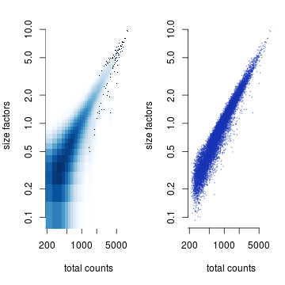
dim(sce)
## [1] 10607 13181
sce = sce[,which(sizeFactors(sce) > 0.05)]
dim(sce)
## [1] 10607 13181
sce = normalize(sce)
For dimension reduction, such as calculating PCA or performing TSNE, we should start by identifying a subset of genes with high level of biological signal relative to background (technical) noise. The decomposeVar function from R/cran is designed for this task.
new_trend = makeTechTrend(x=sce)
fit = trendVar(sce, use.spikes=FALSE, loess.args=list(span=0.05))
par(mfrow=c(1,1), mar=c(5,4,2,1), bty="n")
plot(fit$mean, fit$var, pch=20, col=rgb(0.1,0.2,0.7,0.6),
xlab="log(mean)", ylab="var")
curve(fit$trend(x), col="orange", lwd=2, add=TRUE)
curve(new_trend(x), col="red", lwd=2, add=TRUE)
legend("top", legend=c("Poisson noise", "observed trend"),
lty=1, lwd=2, col=c("red", "orange"), bty="n")

fit$trend = new_trend
# obtain bio, FDR, pvalues for testing for HVGs (highly variable genes)
dec = decomposeVar(fit=fit)
top_dec = dec[order(dec$bio, decreasing=TRUE),]
plotExpression(sce, features=rownames(top_dec)[1:10])

When performing PCA, we can use all the genes or just those genes with high signal-to-noise ratio. TSNE analysis is usually based on the top PCs rather than the original gene expression data. We first perform PCA using all the genes and the function denoisePCA can automatically select the PCs based on modeling of technical noise.
date()
## [1] "Tue Nov 20 11:02:59 2018"
sce = denoisePCA(sce,technical=new_trend,approx=TRUE) # Using the Poisson trend fit
# sce = denoisePCA(sce,technical=fit$trend,approx=TRUE) # Using the observed trend fit
date()
## [1] "Tue Nov 20 11:06:23 2018"
dim(reducedDim(sce,"PCA"))
## [1] 13181 94
par(mfrow=c(1,1))
plot(log10(attr(reducedDim(sce), "percentVar")), xlab="PC",
ylab="log10(Prop of variance explained)", pch=20, cex=0.6,
col=rgb(0.8, 0.2, 0.2, 0.5))
abline(v=ncol(reducedDim(sce,"PCA")), lty=2, col="red")
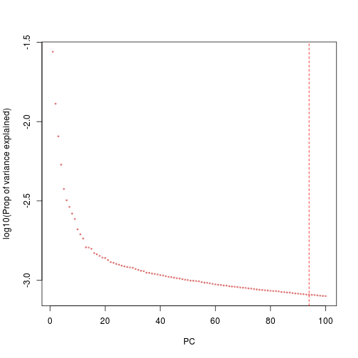
df_redDim = smart_df(colData(sce)[,c("sample_name","part_cell_id",
paste0("paper_TSNE",1:2),"log10_total_features","paper_clusters",
"paper_clusters_name","paper_cell_type")],
reducedDim(sce, "PCA")[,1:2])
rownames(df_redDim) = NULL
# all_vars = c("part_cell_id","log10_total_features","paper_clusters",
# "paper_clusters_name","paper_cell_type")
ggplot_custom(DATA = df_redDim,X = "paper_TSNE1",Y = "paper_TSNE2",COL = "part_cell_id",TYPE = "cat")

ggplot_custom(DATA = df_redDim,X = "paper_TSNE1",Y = "paper_TSNE2",COL = "log10_total_features",TYPE = "cont")
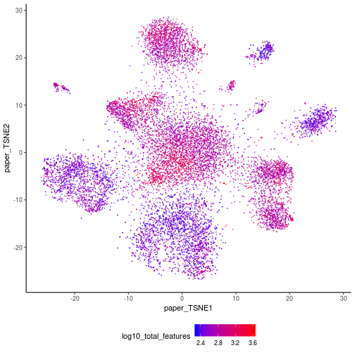
ggplot_custom(DATA = df_redDim,X = "paper_TSNE1",Y = "paper_TSNE2",COL = "paper_clusters",TYPE = "cat")
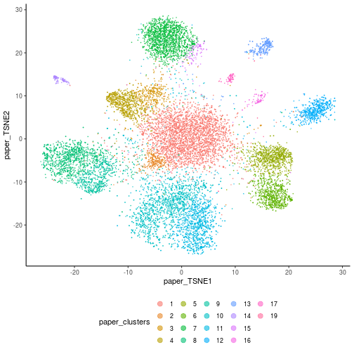
ggplot_custom(DATA = df_redDim,X = "paper_TSNE1",Y = "paper_TSNE2",COL = "paper_clusters_name",TYPE = "cat")
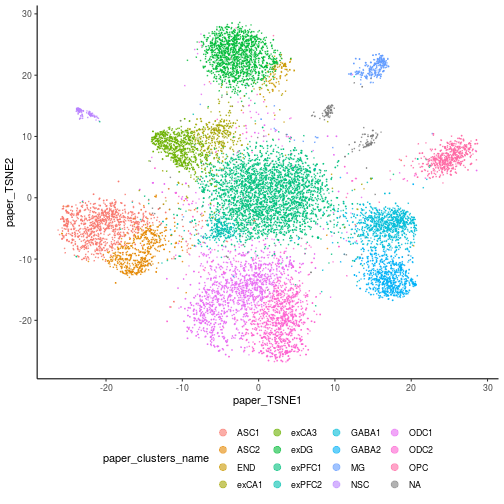
ggplot_custom(DATA = df_redDim,X = "paper_TSNE1",Y = "paper_TSNE2",COL = "paper_cell_type",TYPE = "cat")
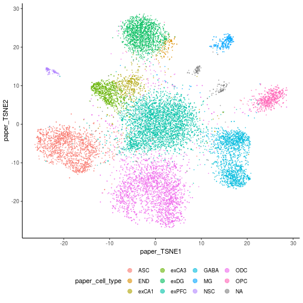
# ggplot_custom(DATA = df_redDim,X = "PC1",Y = "PC2",COL = "part_cell_id",TYPE = "cat")
# ggplot_custom(DATA = df_redDim,X = "PC1",Y = "PC2",COL = "log10_total_features",TYPE = "cont")
# ggplot_custom(DATA = df_redDim,X = "PC1",Y = "PC2",COL = "paper_clusters",TYPE = "cat")
# ggplot_custom(DATA = df_redDim,X = "PC1",Y = "PC2",COL = "paper_clusters_name",TYPE = "cat")
# ggplot_custom(DATA = df_redDim,X = "PC1",Y = "PC2",COL = "paper_cell_type",TYPE = "cat")
date()
## [1] "Tue Nov 20 11:06:29 2018"
sce = runTSNE(sce,use_dimred="PCA",perplexity=30,rand_seed=100)
date()
## [1] "Tue Nov 20 11:09:46 2018"
tmp_df = smart_df(reducedDim(sce,"TSNE"))
rownames(tmp_df) = NULL
names(tmp_df) = paste0("my_TSNE",1:2)
df_redDim = smart_df(df_redDim,tmp_df); rm(tmp_df)
df_redDim[1:5,]
## sample_name part_cell_id paper_TSNE1 paper_TSNE2
## 1 hHP1_AACACTATCTAC hHP1 -8.436537 7.721106
## 2 hHP1_CTACGCATCCAT hHP1 -6.606278 8.099538
## 3 hHP1_TCGGTACTAATA hHP1 -6.724967 8.011943
## 4 hHP1_CCCGCACGCTAT hHP1 -6.286364 7.892359
## 5 hHP1_TCATTTTGTCAT hHP1 -10.455725 2.374719
## log10_total_features paper_clusters paper_clusters_name paper_cell_type
## 1 3.393048 4 exCA3 exCA3
## 2 3.453624 3 exCA1 exCA1
## 3 3.458638 3 exCA1 exCA1
## 4 3.419129 3 exCA1 exCA1
## 5 3.345178 3 exCA1 exCA1
## PC1 PC2 my_TSNE1 my_TSNE2
## 1 3.326051 -1.240640 -7.3743153 -23.11479
## 2 3.747268 -1.075909 -4.5854989 -22.91621
## 3 4.543743 -1.682305 -2.2475151 -24.15181
## 4 4.255275 -1.072497 -2.4908046 -24.51547
## 5 3.136629 -1.083864 -0.1051864 -21.48583
ggplot_custom(DATA = df_redDim,X = "my_TSNE1",Y = "my_TSNE2",COL = "part_cell_id",TYPE = "cat")
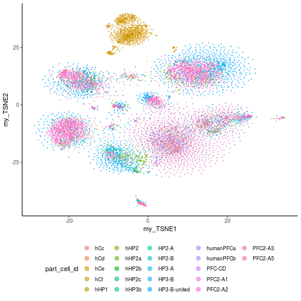
ggplot_custom(DATA = df_redDim,X = "my_TSNE1",Y = "my_TSNE2",COL = "log10_total_features",TYPE = "cont")
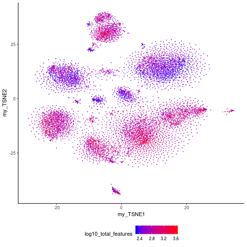
ggplot_custom(DATA = df_redDim,X = "my_TSNE1",Y = "my_TSNE2",COL = "paper_clusters",TYPE = "cat")
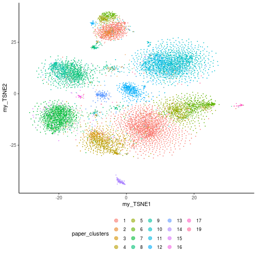
ggplot_custom(DATA = df_redDim,X = "my_TSNE1",Y = "my_TSNE2",COL = "paper_clusters_name",TYPE = "cat")
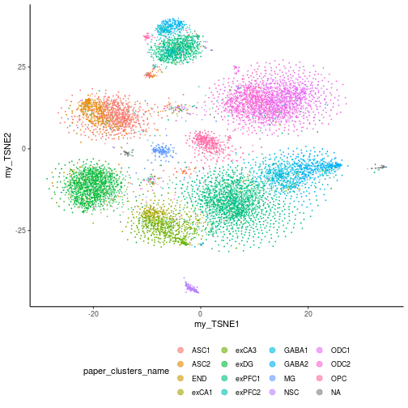
ggplot_custom(DATA = df_redDim,X = "my_TSNE1",Y = "my_TSNE2",COL = "paper_cell_type",TYPE = "cat")
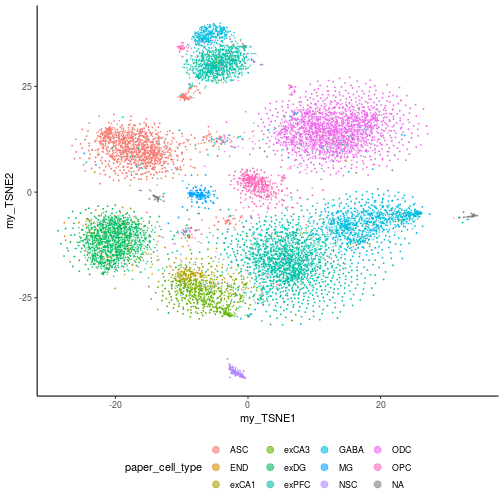
saveRDS(list(sce = sce,dec = dec,df_redDim = df_redDim),
file.path(work_dir,"post_redDim_all_genes.rds"))
# Note that this contains the results from PCA and TSNE with all genes
# rds = readRDS("post_redDim_all_genes.rds"); sce = rds$sce; dec = rds$dec; df_redDim = rds$df_redDim; rm(rds)
We select around top 1000 genes for the PCA and use the top 50 PCs for TSNE projection.
library(svd)
library(Rtsne)
summary(dec$bio)
## Min. 1st Qu. Median Mean 3rd Qu. Max.
## -0.022095 0.000137 0.003208 0.009682 0.008864 5.261563
dec1 = dec
dec1$bio[which(dec$bio < 1e-5)] = 1e-5
dec1$FDR[which(dec$FDR < 1e-100)] = 1e-100
par(mfrow=c(1,2))
hist(log10(dec1$bio),breaks=100,main="")
hist(log10(dec1$FDR),breaks=100,main="")
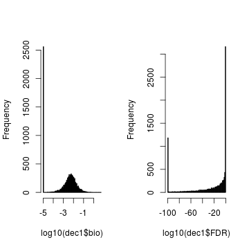
summary(dec$FDR[dec$bio > 0.01])
## Min. 1st Qu. Median Mean 3rd Qu. Max.
## 0.000e+00 0.000e+00 0.000e+00 1.356e-05 0.000e+00 2.618e-02
summary(dec$FDR[dec$bio > 0.03])
## Min. 1st Qu. Median Mean 3rd Qu. Max.
## 0.000e+00 0.000e+00 0.000e+00 5.310e-10 0.000e+00 3.248e-07
table(dec$FDR < 1e-10,dec$bio > 0.03)
##
## FALSE TRUE
## FALSE 5471 6
## TRUE 4448 682
table(dec$FDR < 1e-10,dec$bio > 0.01)
##
## FALSE TRUE
## FALSE 5347 130
## TRUE 2892 2238
table(dec$FDR < 1e-10,dec$bio > 0.02)
##
## FALSE TRUE
## FALSE 5455 22
## TRUE 4044 1086
# Subsetting genes based on FDR and biological residual thresholds
w2kp = which(dec$FDR < 1e-10 & dec$bio > 0.02)
sce_hvg = sce[w2kp,]
sce_hvg
## class: SingleCellExperiment
## dim: 1086 13181
## metadata(1): log.exprs.offset
## assays(2): counts logcounts
## rownames(1086): AATK AC004158.3 ... ZSWIM6 ZNF704
## rowData names(20): hgnc_symbol external_gene_name ...
## n_cells_counts pct_dropout_counts
## colnames(13181): hHP1_AACACTATCTAC hHP1_CTACGCATCCAT ...
## PFC-CD_CACGCTCCCCTA PFC-CD_CGTCATTAGCAG
## colData names(66): sample_name part_cell_id ...
## pct_counts_top_50_features_Ri pct_counts_top_100_features_Ri
## reducedDimNames(2): PCA TSNE
## spikeNames(0):
# Extracting log2(norm_express+1)
edat = t(as.matrix(logcounts(sce_hvg)))
edat = scale(edat)
dim(edat)
## [1] 13181 1086
edat[1:2,1:3]
## AATK AC004158.3 ABLIM1
## hHP1_AACACTATCTAC -0.3259988 -0.1787744 -0.3700985
## hHP1_CTACGCATCCAT 0.1885733 -0.1787744 -0.3700985
# Perform SVD on sce_hvg
date()
## [1] "Tue Nov 20 11:10:40 2018"
ppk = propack.svd(edat,neig=50)
date()
## [1] "Tue Nov 20 11:11:02 2018"
pca = t(ppk$d*t(ppk$u)) # calculates pc scores aka principal components
tmp_df = smart_df(pca[,1:2])
names(tmp_df) = paste0("HVG_PC",seq(ncol(tmp_df)))
df_hvg = smart_df(colData(sce)[,c("sample_name","part_cell_id",
paste0("paper_TSNE",1:2),"log10_total_features","paper_clusters",
"paper_clusters_name","paper_cell_type")],tmp_df)
rownames(df_hvg) = NULL
# ggplot_custom(DATA = df_hvg,X = "HVG_PC1",Y = "HVG_PC2",COL = "part_cell_id",TYPE = "cat")
# ggplot_custom(DATA = df_hvg,X = "HVG_PC1",Y = "HVG_PC2",COL = "log10_total_features",TYPE = "cont")
# ggplot_custom(DATA = df_hvg,X = "HVG_PC1",Y = "HVG_PC2",COL = "paper_clusters",TYPE = "cat")
# ggplot_custom(DATA = df_hvg,X = "HVG_PC1",Y = "HVG_PC2",COL = "paper_clusters_name",TYPE = "cat")
# ggplot_custom(DATA = df_hvg,X = "HVG_PC1",Y = "HVG_PC2",COL = "paper_cell_type",TYPE = "cat")
set.seed(100)
date()
## [1] "Tue Nov 20 11:11:02 2018"
tsne = Rtsne(pca, pca = FALSE)
date()
## [1] "Tue Nov 20 11:13:51 2018"
tmp_df = smart_df(tsne$Y)
names(tmp_df) = paste0("HVG_TSNE",seq(ncol(tmp_df)))
df_hvg = smart_df(df_hvg,tmp_df)
ggplot_custom(DATA = df_hvg,X = "HVG_TSNE1",Y = "HVG_TSNE2",COL = "part_cell_id",TYPE = "cat")
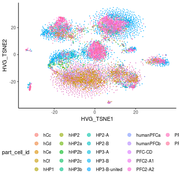
ggplot_custom(DATA = df_hvg,X = "HVG_TSNE1",Y = "HVG_TSNE2",COL = "log10_total_features",TYPE = "cont")

ggplot_custom(DATA = df_hvg,X = "HVG_TSNE1",Y = "HVG_TSNE2",COL = "paper_clusters",TYPE = "cat")
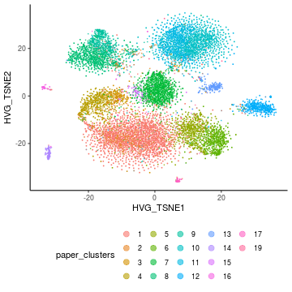
ggplot_custom(DATA = df_hvg,X = "HVG_TSNE1",Y = "HVG_TSNE2",COL = "paper_clusters_name",TYPE = "cat")
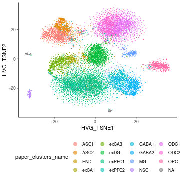
ggplot_custom(DATA = df_hvg,X = "HVG_TSNE1",Y = "HVG_TSNE2",COL = "paper_cell_type",TYPE = "cat")
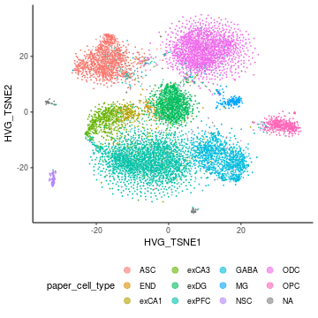
reducedDims(sce_hvg) = SimpleList(PCA=pca, TSNE=tsne$Y)
sce_hvg
## class: SingleCellExperiment
## dim: 1086 13181
## metadata(1): log.exprs.offset
## assays(2): counts logcounts
## rownames(1086): AATK AC004158.3 ... ZSWIM6 ZNF704
## rowData names(20): hgnc_symbol external_gene_name ...
## n_cells_counts pct_dropout_counts
## colnames(13181): hHP1_AACACTATCTAC hHP1_CTACGCATCCAT ...
## PFC-CD_CACGCTCCCCTA PFC-CD_CGTCATTAGCAG
## colData names(66): sample_name part_cell_id ...
## pct_counts_top_50_features_Ri pct_counts_top_100_features_Ri
## reducedDimNames(2): PCA TSNE
## spikeNames(0):
saveRDS(sce_hvg,file.path(work_dir,"post_HVG.rds"))
Next we cluster the cells using a simple kmeans method on the top 50 PCs. We set the number of clusters to be 5 thru 15, to include the 12 cell types reported by [@habib2017massively].
all_num_clust = c(5:15)
df_hvg = df_hvg[,!grepl("^KM_",names(df_hvg))]
for(num_clust in all_num_clust){
cat(paste0("KM with ",num_clust," clusters.\n"))
kmeans_out = kmeans(reducedDim(sce_hvg, "PCA"),
centers = num_clust,
iter.max = 1e8,nstart = 2500,
algorithm = "MacQueen")
km_label = paste0("KM_",num_clust)
df_hvg[[km_label]] = as.factor(kmeans_out$cluster)
print(smart_table(df_hvg$paper_cell_type,kmeans_out$cluster))
print(smart_table(df_hvg$paper_clusters_name,kmeans_out$cluster))
print(ggplot_custom(DATA = df_hvg,X = "HVG_TSNE1",Y = "HVG_TSNE2",
COL = km_label,TYPE = "cat"))
}
## KM with 5 clusters.
##
## 1 2 3 4 5
## ASC 1572 25 3 59 0
## END 0 1 1 118 0
## exCA1 5 4 0 380 1
## exCA3 1 3 0 733 0
## exDG 0 3 0 1418 0
## exPFC 52 61 6 3218 4
## GABA 4 3 2 1636 1
## MG 9 23 2 36 211
## NSC 5 0 0 3 153
## ODC 6 2576 6 49 2
## OPC 2 5 542 29 0
## <NA> 11 17 0 109 71
##
## 1 2 3 4 5
## ASC1 1023 14 2 39 0
## ASC2 549 11 1 20 0
## END 0 1 1 118 0
## exCA1 5 4 0 380 1
## exCA3 1 3 0 733 0
## exDG 0 3 0 1418 0
## exPFC1 37 36 6 2967 2
## exPFC2 15 25 0 251 2
## GABA1 1 3 1 868 1
## GABA2 3 0 1 768 0
## MG 9 23 2 36 211
## NSC 5 0 0 3 153
## ODC1 5 1445 4 28 2
## ODC2 1 1131 2 21 0
## OPC 2 5 542 29 0
## <NA> 11 17 0 109 71
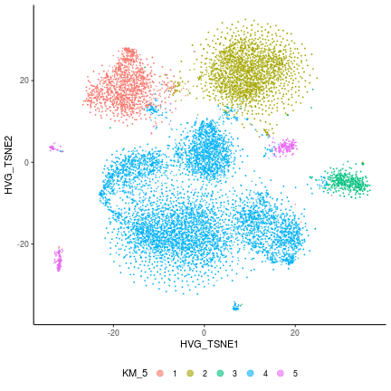
## KM with 6 clusters.
##
## 1 2 3 4 5 6
## ASC 0 3 58 25 1573 0
## END 0 1 118 1 0 0
## exCA1 0 0 380 4 5 1
## exCA3 0 0 733 3 1 0
## exDG 0 0 1418 3 0 0
## exPFC 0 6 3220 61 52 2
## GABA 0 2 1636 3 4 1
## MG 0 1 30 13 7 230
## NSC 144 0 8 0 9 0
## ODC 0 6 49 2575 6 3
## OPC 0 540 29 7 2 0
## <NA> 1 0 112 17 12 66
##
## 1 2 3 4 5 6
## ASC1 0 2 39 14 1023 0
## ASC2 0 1 19 11 550 0
## END 0 1 118 1 0 0
## exCA1 0 0 380 4 5 1
## exCA3 0 0 733 3 1 0
## exDG 0 0 1418 3 0 0
## exPFC1 0 6 2969 36 37 0
## exPFC2 0 0 251 25 15 2
## GABA1 0 1 868 3 1 1
## GABA2 0 1 768 0 3 0
## MG 0 1 30 13 7 230
## NSC 144 0 8 0 9 0
## ODC1 0 4 28 1444 5 3
## ODC2 0 2 21 1131 1 0
## OPC 0 540 29 7 2 0
## <NA> 1 0 112 17 12 66
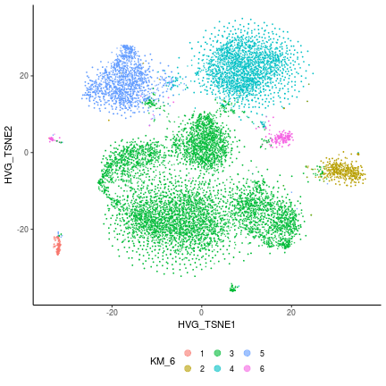
## KM with 7 clusters.
##
## 1 2 3 4 5 6 7
## ASC 3 51 0 1573 25 7 0
## END 1 115 0 0 1 3 0
## exCA1 0 374 0 6 4 5 1
## exCA3 0 728 0 1 3 5 0
## exDG 0 1417 0 0 3 1 0
## exPFC 6 3167 0 52 61 53 2
## GABA 0 293 0 3 3 1346 1
## MG 1 30 0 7 13 0 230
## NSC 0 7 144 10 0 0 0
## ODC 6 42 0 6 2574 8 3
## OPC 541 25 0 2 5 5 0
## <NA> 0 59 1 12 17 53 66
##
## 1 2 3 4 5 6 7
## ASC1 2 34 0 1023 14 5 0
## ASC2 1 17 0 550 11 2 0
## END 1 115 0 0 1 3 0
## exCA1 0 374 0 6 4 5 1
## exCA3 0 728 0 1 3 5 0
## exDG 0 1417 0 0 3 1 0
## exPFC1 6 2919 0 37 36 50 0
## exPFC2 0 248 0 15 25 3 2
## GABA1 0 277 0 1 3 592 1
## GABA2 0 16 0 2 0 754 0
## MG 1 30 0 7 13 0 230
## NSC 0 7 144 10 0 0 0
## ODC1 4 25 0 5 1444 3 3
## ODC2 2 17 0 1 1130 5 0
## OPC 541 25 0 2 5 5 0
## <NA> 0 59 1 12 17 53 66
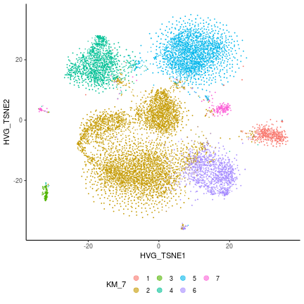
## KM with 8 clusters.
##
## 1 2 3 4 5 6 7 8
## ASC 0 2 1572 3 42 15 25 0
## END 0 3 0 1 2 113 1 0
## exCA1 0 5 6 0 75 299 4 1
## exCA3 0 4 1 0 201 528 3 0
## exDG 0 0 0 0 16 1402 3 0
## exPFC 0 29 52 5 3137 57 59 2
## GABA 0 1172 3 0 452 15 3 1
## MG 0 0 7 1 20 11 13 229
## NSC 144 0 8 0 0 9 0 0
## ODC 0 7 6 6 28 14 2575 3
## OPC 0 3 2 541 23 4 5 0
## <NA> 1 54 12 0 16 42 17 66
##
## 1 2 3 4 5 6 7 8
## ASC1 0 2 1024 2 27 9 14 0
## ASC2 0 0 548 1 15 6 11 0
## END 0 3 0 1 2 113 1 0
## exCA1 0 5 6 0 75 299 4 1
## exCA3 0 4 1 0 201 528 3 0
## exDG 0 0 0 0 16 1402 3 0
## exPFC1 0 26 37 5 2891 54 35 0
## exPFC2 0 3 15 0 246 3 24 2
## GABA1 0 432 1 0 425 12 3 1
## GABA2 0 740 2 0 27 3 0 0
## MG 0 0 7 1 20 11 13 229
## NSC 144 0 8 0 0 9 0 0
## ODC1 0 2 5 4 18 7 1445 3
## ODC2 0 5 1 2 10 7 1130 0
## OPC 0 3 2 541 23 4 5 0
## <NA> 1 54 12 0 16 42 17 66
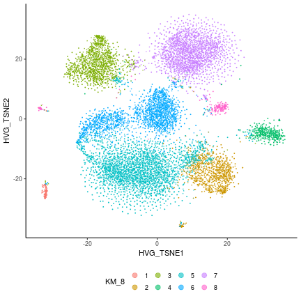
## KM with 9 clusters.
##
## 1 2 3 4 5 6 7 8 9
## ASC 23 0 15 42 4 1570 0 3 2
## END 1 0 113 2 0 0 0 1 3
## exCA1 6 1 298 75 0 5 0 0 5
## exCA3 3 0 528 201 0 1 0 0 4
## exDG 3 0 1402 16 0 0 0 0 0
## exPFC 59 2 56 3135 6 48 0 5 30
## GABA 3 1 15 454 0 3 0 0 1170
## MG 13 228 11 20 1 7 0 1 0
## NSC 0 0 9 0 0 8 144 0 0
## ODC 1682 3 11 26 900 5 0 6 6
## OPC 6 0 4 23 5 2 0 535 3
## <NA> 18 66 41 16 0 12 1 0 54
##
## 1 2 3 4 5 6 7 8 9
## ASC1 13 0 9 27 2 1023 0 2 2
## ASC2 10 0 6 15 2 547 0 1 0
## END 1 0 113 2 0 0 0 1 3
## exCA1 6 1 298 75 0 5 0 0 5
## exCA3 3 0 528 201 0 1 0 0 4
## exDG 3 0 1402 16 0 0 0 0 0
## exPFC1 35 0 54 2889 3 35 0 5 27
## exPFC2 24 2 2 246 3 13 0 0 3
## GABA1 3 1 12 427 0 1 0 0 430
## GABA2 0 0 3 27 0 2 0 0 740
## MG 13 228 11 20 1 7 0 1 0
## NSC 0 0 9 0 0 8 144 0 0
## ODC1 743 3 5 17 706 5 0 4 1
## ODC2 939 0 6 9 194 0 0 2 5
## OPC 6 0 4 23 5 2 0 535 3
## <NA> 18 66 41 16 0 12 1 0 54
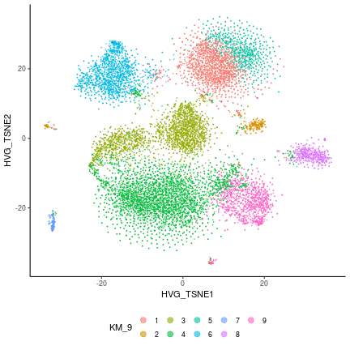
## KM with 10 clusters.
##
## 1 2 3 4 5 6 7 8 9 10
## ASC 0 1570 0 23 15 3 2 0 42 4
## END 0 0 0 1 113 1 3 0 2 0
## exCA1 0 5 0 6 298 0 6 0 75 0
## exCA3 0 1 0 3 528 0 4 0 201 0
## exDG 0 0 0 3 1402 0 0 0 16 0
## exPFC 0 48 0 59 56 5 29 2 3136 6
## GABA 1 3 0 3 15 0 1172 0 452 0
## MG 0 11 0 14 11 1 0 223 20 1
## NSC 0 8 144 0 9 0 0 0 0 0
## ODC 0 6 0 1681 11 6 6 2 25 902
## OPC 0 2 0 6 4 535 3 0 23 5
## <NA> 68 13 0 17 39 0 53 2 16 0
##
## 1 2 3 4 5 6 7 8 9 10
## ASC1 0 1023 0 13 9 2 2 0 27 2
## ASC2 0 547 0 10 6 1 0 0 15 2
## END 0 0 0 1 113 1 3 0 2 0
## exCA1 0 5 0 6 298 0 6 0 75 0
## exCA3 0 1 0 3 528 0 4 0 201 0
## exDG 0 0 0 3 1402 0 0 0 16 0
## exPFC1 0 35 0 35 54 5 26 0 2890 3
## exPFC2 0 13 0 24 2 0 3 2 246 3
## GABA1 1 1 0 3 12 0 432 0 425 0
## GABA2 0 2 0 0 3 0 740 0 27 0
## MG 0 11 0 14 11 1 0 223 20 1
## NSC 0 8 144 0 9 0 0 0 0 0
## ODC1 0 5 0 742 5 4 2 2 16 708
## ODC2 0 1 0 939 6 2 4 0 9 194
## OPC 0 2 0 6 4 535 3 0 23 5
## <NA> 68 13 0 17 39 0 53 2 16 0
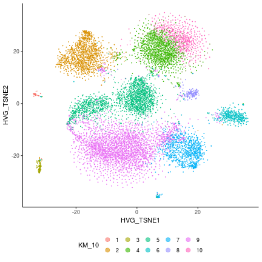
## KM with 11 clusters.
##
## 1 2 3 4 5 6 7 8 9 10 11
## ASC 518 0 12 5 19 1067 0 1 36 0 1
## END 0 0 112 0 1 1 0 3 2 0 1
## exCA1 0 0 297 0 5 7 0 7 74 0 0
## exCA3 0 0 528 0 3 2 0 4 200 0 0
## exDG 0 0 1402 0 3 0 0 0 16 0 0
## exPFC 10 0 55 6 54 46 0 32 3131 2 5
## GABA 0 0 15 0 3 4 1 1169 454 0 0
## MG 2 0 11 1 14 9 0 0 20 222 2
## NSC 2 144 8 0 0 7 0 0 0 0 0
## ODC 0 0 11 896 1686 7 0 6 25 2 6
## OPC 1 0 4 5 6 2 0 3 23 0 534
## <NA> 2 0 33 0 17 9 69 59 16 2 1
##
## 1 2 3 4 5 6 7 8 9 10 11
## ASC1 190 0 6 3 10 843 0 1 25 0 0
## ASC2 328 0 6 2 9 224 0 0 11 0 1
## END 0 0 112 0 1 1 0 3 2 0 1
## exCA1 0 0 297 0 5 7 0 7 74 0 0
## exCA3 0 0 528 0 3 2 0 4 200 0 0
## exDG 0 0 1402 0 3 0 0 0 16 0 0
## exPFC1 6 0 53 3 31 36 0 29 2885 0 5
## exPFC2 4 0 2 3 23 10 0 3 246 2 0
## GABA1 0 0 12 0 3 1 1 430 427 0 0
## GABA2 0 0 3 0 0 3 0 739 27 0 0
## MG 2 0 11 1 14 9 0 0 20 222 2
## NSC 2 144 8 0 0 7 0 0 0 0 0
## ODC1 0 0 5 704 745 6 0 2 16 2 4
## ODC2 0 0 6 192 941 1 0 4 9 0 2
## OPC 1 0 4 5 6 2 0 3 23 0 534
## <NA> 2 0 33 0 17 9 69 59 16 2 1
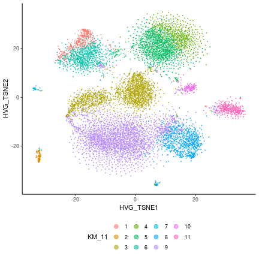
## KM with 12 clusters.
##
## 1 2 3 4 5 6 7 8 9 10 11 12
## ASC 0 11 2 18 34 0 1066 0 518 3 6 1
## END 0 105 3 1 2 0 1 0 0 7 0 1
## exCA1 0 179 5 5 76 0 7 0 0 118 0 0
## exCA3 0 23 4 3 76 0 1 0 0 630 0 0
## exDG 0 1380 0 3 15 0 0 0 0 23 0 0
## exPFC 0 38 20 54 3107 0 46 2 10 53 6 5
## GABA 0 4 1154 3 443 1 4 0 0 37 0 0
## MG 0 9 0 14 18 0 9 223 2 4 1 1
## NSC 144 7 0 0 0 0 7 0 2 1 0 0
## ODC 0 10 5 1676 26 0 7 2 0 1 906 6
## OPC 0 5 3 5 20 0 3 0 1 2 6 533
## <NA> 0 40 46 17 17 68 10 2 2 5 0 1
##
## 1 2 3 4 5 6 7 8 9 10 11 12
## ASC1 0 6 1 10 24 0 841 0 191 2 3 0
## ASC2 0 5 1 8 10 0 225 0 327 1 3 1
## END 0 105 3 1 2 0 1 0 0 7 0 1
## exCA1 0 179 5 5 76 0 7 0 0 118 0 0
## exCA3 0 23 4 3 76 0 1 0 0 630 0 0
## exDG 0 1380 0 3 15 0 0 0 0 23 0 0
## exPFC1 0 36 17 31 2865 0 36 0 6 49 3 5
## exPFC2 0 2 3 23 242 0 10 2 4 4 3 0
## GABA1 0 3 414 3 419 1 1 0 0 33 0 0
## GABA2 0 1 740 0 24 0 3 0 0 4 0 0
## MG 0 9 0 14 18 0 9 223 2 4 1 1
## NSC 144 7 0 0 0 0 7 0 2 1 0 0
## ODC1 0 5 1 737 17 0 6 2 0 0 712 4
## ODC2 0 5 4 939 9 0 1 0 0 1 194 2
## OPC 0 5 3 5 20 0 3 0 1 2 6 533
## <NA> 0 40 46 17 17 68 10 2 2 5 0 1
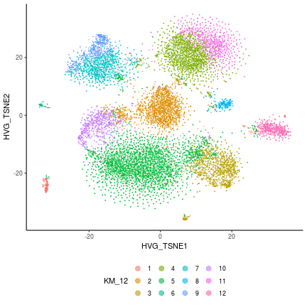
## KM with 13 clusters.
##
## 1 2 3 4 5 6 7 8 9 10 11 12 13
## ASC 2 1 519 35 5 0 4 0 11 0 4 16 1062
## END 3 1 0 2 0 0 0 0 105 0 7 1 1
## exCA1 5 0 0 76 0 0 0 0 177 0 118 8 6
## exCA3 4 0 0 76 0 0 0 0 23 0 630 3 1
## exDG 0 0 0 15 0 0 0 0 1379 0 23 4 0
## exPFC 19 5 10 3108 11 2 6 0 37 0 53 48 42
## GABA 1153 0 0 442 0 0 0 0 4 1 37 5 4
## MG 0 2 2 16 1 220 1 0 10 0 4 16 9
## NSC 0 0 2 0 0 0 0 145 6 0 1 0 7
## ODC 5 6 0 24 720 1 688 0 8 0 1 1181 5
## OPC 3 534 1 20 0 0 5 0 5 0 2 6 2
## <NA> 46 1 2 17 3 2 0 0 40 68 5 14 10
##
## 1 2 3 4 5 6 7 8 9 10 11 12 13
## ASC1 1 0 191 25 4 0 1 0 6 0 2 8 840
## ASC2 1 1 328 10 1 0 3 0 5 0 2 8 222
## END 3 1 0 2 0 0 0 0 105 0 7 1 1
## exCA1 5 0 0 76 0 0 0 0 177 0 118 8 6
## exCA3 4 0 0 76 0 0 0 0 23 0 630 3 1
## exDG 0 0 0 15 0 0 0 0 1379 0 23 4 0
## exPFC1 16 5 6 2866 1 0 3 0 35 0 49 35 32
## exPFC2 3 0 4 242 10 2 3 0 2 0 4 13 10
## GABA1 413 0 0 418 0 0 0 0 3 1 33 5 1
## GABA2 740 0 0 24 0 0 0 0 1 0 4 0 3
## MG 0 2 2 16 1 220 1 0 10 0 4 16 9
## NSC 0 0 2 0 0 0 0 145 6 0 1 0 7
## ODC1 1 4 0 17 172 1 624 0 3 0 0 658 4
## ODC2 4 2 0 7 548 0 64 0 5 0 1 523 1
## OPC 3 534 1 20 0 0 5 0 5 0 2 6 2
## <NA> 46 1 2 17 3 2 0 0 40 68 5 14 10
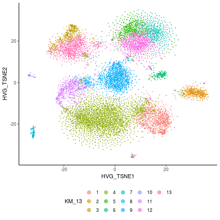
## KM with 14 clusters.
##
## 1 2 3 4 5 6 7 8 9 10 11 12 13
## ASC 2 4 1 13 368 0 0 10 771 5 0 451 34
## END 7 0 3 1 0 0 0 105 1 0 0 0 2
## exCA1 118 0 4 8 0 0 0 177 6 0 0 1 76
## exCA3 630 0 4 3 0 0 0 23 1 0 0 0 76
## exDG 23 0 0 4 0 0 0 1379 0 0 0 0 15
## exPFC 53 6 19 43 7 1 0 37 44 12 0 7 3107
## GABA 37 0 1153 5 0 0 1 4 6 0 0 0 440
## MG 4 1 0 16 1 219 0 10 9 1 0 2 16
## NSC 1 0 0 0 5 0 0 7 3 0 144 1 0
## ODC 1 687 6 1182 0 1 0 8 5 719 0 0 25
## OPC 2 5 3 6 1 0 0 5 3 0 0 1 20
## <NA> 5 0 46 14 2 2 68 39 11 3 0 1 17
##
## 14
## ASC 0
## END 1
## exCA1 0
## exCA3 0
## exDG 0
## exPFC 5
## GABA 0
## MG 2
## NSC 0
## ODC 5
## OPC 532
## <NA> 0
##
## 1 2 3 4 5 6 7 8 9 10 11 12 13
## ASC1 1 1 1 8 28 0 0 5 580 4 0 426 24
## ASC2 1 3 0 5 340 0 0 5 191 1 0 25 10
## END 7 0 3 1 0 0 0 105 1 0 0 0 2
## exCA1 118 0 4 8 0 0 0 177 6 0 0 1 76
## exCA3 630 0 4 3 0 0 0 23 1 0 0 0 76
## exDG 23 0 0 4 0 0 0 1379 0 0 0 0 15
## exPFC1 49 3 16 33 4 0 0 35 32 1 0 5 2865
## exPFC2 4 3 3 10 3 1 0 2 12 11 0 2 242
## GABA1 33 0 413 5 0 0 1 3 3 0 0 0 416
## GABA2 4 0 740 0 0 0 0 1 3 0 0 0 24
## MG 4 1 0 16 1 219 0 10 9 1 0 2 16
## NSC 1 0 0 0 5 0 0 7 3 0 144 1 0
## ODC1 0 623 1 660 0 1 0 3 5 171 0 0 17
## ODC2 1 64 5 522 0 0 0 5 0 548 0 0 8
## OPC 2 5 3 6 1 0 0 5 3 0 0 1 20
## <NA> 5 0 46 14 2 2 68 39 11 3 0 1 17
##
## 14
## ASC1 0
## ASC2 0
## END 1
## exCA1 0
## exCA3 0
## exDG 0
## exPFC1 5
## exPFC2 0
## GABA1 0
## GABA2 0
## MG 2
## NSC 0
## ODC1 3
## ODC2 2
## OPC 532
## <NA> 0
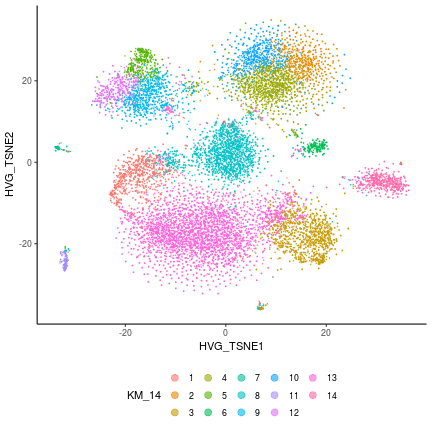
## KM with 15 clusters.
##
## 1 2 3 4 5 6 7 8 9 10 11 12 13
## ASC 0 1 349 0 10 0 4 33 5 788 2 0 0
## END 0 3 0 0 104 0 0 2 0 1 8 0 1
## exCA1 0 4 0 0 173 0 0 73 0 6 125 0 0
## exCA3 0 4 0 0 22 0 0 74 0 1 633 0 0
## exDG 0 0 0 0 1380 0 0 15 0 0 22 0 0
## exPFC 2 18 5 0 37 5 5 3107 13 46 53 0 0
## GABA 0 1153 0 1 4 0 0 440 0 6 37 0 0
## MG 219 0 1 0 10 2 1 16 1 9 4 0 0
## NSC 0 0 3 0 7 0 0 0 0 5 1 144 0
## ODC 1 5 0 0 8 2 676 25 727 6 1 0 3
## OPC 0 3 1 0 5 520 5 20 0 2 2 0 15
## <NA> 2 46 2 68 39 0 0 17 3 11 5 0 0
##
## 14 15
## ASC 13 454
## END 1 0
## exCA1 8 1
## exCA3 3 0
## exDG 4 0
## exPFC 43 7
## GABA 5 0
## MG 16 2
## NSC 0 1
## ODC 1185 0
## OPC 4 1
## <NA> 14 1
##
## 1 2 3 4 5 6 7 8 9 10 11 12 13
## ASC1 0 1 27 0 5 0 1 24 4 579 1 0 0
## ASC2 0 0 322 0 5 0 3 9 1 209 1 0 0
## END 0 3 0 0 104 0 0 2 0 1 8 0 1
## exCA1 0 4 0 0 173 0 0 73 0 6 125 0 0
## exCA3 0 4 0 0 22 0 0 74 0 1 633 0 0
## exDG 0 0 0 0 1380 0 0 15 0 0 22 0 0
## exPFC1 0 15 2 0 35 5 3 2865 1 35 49 0 0
## exPFC2 2 3 3 0 2 0 2 242 12 11 4 0 0
## GABA1 0 413 0 1 3 0 0 416 0 3 33 0 0
## GABA2 0 740 0 0 1 0 0 24 0 3 4 0 0
## MG 219 0 1 0 10 2 1 16 1 9 4 0 0
## NSC 0 0 3 0 7 0 0 0 0 5 1 144 0
## ODC1 1 1 0 0 3 1 613 17 181 5 0 0 2
## ODC2 0 4 0 0 5 1 63 8 546 1 1 0 1
## OPC 0 3 1 0 5 520 5 20 0 2 2 0 15
## <NA> 2 46 2 68 39 0 0 17 3 11 5 0 0
##
## 14 15
## ASC1 8 428
## ASC2 5 26
## END 1 0
## exCA1 8 1
## exCA3 3 0
## exDG 4 0
## exPFC1 33 5
## exPFC2 10 2
## GABA1 5 0
## GABA2 0 0
## MG 16 2
## NSC 0 1
## ODC1 660 0
## ODC2 525 0
## OPC 4 1
## <NA> 14 1
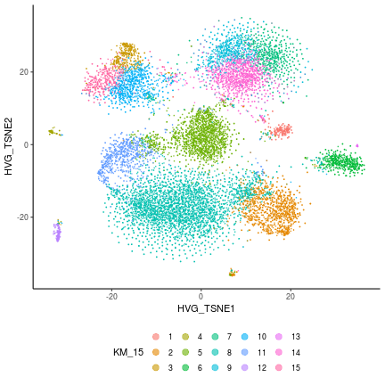
saveRDS(list(sce_hvg=sce_hvg,df_hvg=df_hvg,all_num_clust=all_num_clust),
file.path(work_dir,"post_kmeans.rds"))
Next seek to cluster cells using another method SC3. The code used here is based on SC3 manual. By default, when there are more than 5000 genes, SC3 will
selects a subset of cells uniformly at random (5,000), and obtains clusters from this subset. The inferred labels can be used to train a Support Vector Machine (SVM), which is employed to assign labels to the remaining cells.
By default, SC3 filter genes to select those with dropout percentage between 10 and 90%.
summary(rowData(sce)$pct_dropout_counts)
## Min. 1st Qu. Median Mean 3rd Qu. Max.
## 10.34 93.16 96.08 94.26 97.71 99.70
table(rowData(sce)$pct_dropout_counts < 90)
##
## FALSE TRUE
## 9189 1418
This will end up with 1418 genes. However, we found the clustering resutls using these 1418 genes have considerable discrepency with clustering resutls from Kmeans and cell types reported by [@habib2017massively]. Therefore, we chose to use those genes identified from previous step for SC3.
library(SC3)
rowData(sce_hvg)$feature_symbol = rowData(sce_hvg)$external_gene_name
date()
## [1] "Tue Nov 20 13:53:59 2018"
all_ks = c(10,12)
sce_hvg = sc3(sce_hvg,gene_filter = FALSE,
n_cores = num_cores,ks = all_ks,biology = TRUE,
rand_seed = 100,svm_num_cells = 2000)
date()
## [1] "Tue Nov 20 20:56:19 2018"
dim(colData(sce_hvg))
## [1] 13181 70
colData(sce_hvg)[1:2,1:5]
## DataFrame with 2 rows and 5 columns
## sample_name part_cell_id paper_clusters
## <character> <character> <factor>
## hHP1_AACACTATCTAC hHP1_AACACTATCTAC hHP1 4
## hHP1_CTACGCATCCAT hHP1_CTACGCATCCAT hHP1 3
## paper_clusters_name paper_cell_type
## <character> <character>
## hHP1_AACACTATCTAC exCA3 exCA3
## hHP1_CTACGCATCCAT exCA1 exCA1
names(colData(sce_hvg))
## [1] "sample_name"
## [2] "part_cell_id"
## [3] "paper_clusters"
## [4] "paper_clusters_name"
## [5] "paper_cell_type"
## [6] "paper_TSNE1"
## [7] "paper_TSNE2"
## [8] "is_cell_control"
## [9] "total_features_by_counts"
## [10] "log10_total_features_by_counts"
## [11] "total_counts"
## [12] "log10_total_counts"
## [13] "pct_counts_in_top_50_features"
## [14] "pct_counts_in_top_100_features"
## [15] "pct_counts_in_top_200_features"
## [16] "pct_counts_in_top_500_features"
## [17] "total_features"
## [18] "log10_total_features"
## [19] "pct_counts_top_50_features"
## [20] "pct_counts_top_100_features"
## [21] "pct_counts_top_200_features"
## [22] "pct_counts_top_500_features"
## [23] "total_features_by_counts_endogenous"
## [24] "log10_total_features_by_counts_endogenous"
## [25] "total_counts_endogenous"
## [26] "log10_total_counts_endogenous"
## [27] "pct_counts_endogenous"
## [28] "pct_counts_in_top_50_features_endogenous"
## [29] "pct_counts_in_top_100_features_endogenous"
## [30] "pct_counts_in_top_200_features_endogenous"
## [31] "pct_counts_in_top_500_features_endogenous"
## [32] "total_features_endogenous"
## [33] "log10_total_features_endogenous"
## [34] "pct_counts_top_50_features_endogenous"
## [35] "pct_counts_top_100_features_endogenous"
## [36] "pct_counts_top_200_features_endogenous"
## [37] "pct_counts_top_500_features_endogenous"
## [38] "total_features_by_counts_feature_control"
## [39] "log10_total_features_by_counts_feature_control"
## [40] "total_counts_feature_control"
## [41] "log10_total_counts_feature_control"
## [42] "pct_counts_feature_control"
## [43] "pct_counts_in_top_50_features_feature_control"
## [44] "pct_counts_in_top_100_features_feature_control"
## [45] "total_features_feature_control"
## [46] "log10_total_features_feature_control"
## [47] "pct_counts_top_50_features_feature_control"
## [48] "pct_counts_top_100_features_feature_control"
## [49] "total_features_by_counts_Mt"
## [50] "log10_total_features_by_counts_Mt"
## [51] "total_counts_Mt"
## [52] "log10_total_counts_Mt"
## [53] "pct_counts_Mt"
## [54] "total_features_Mt"
## [55] "log10_total_features_Mt"
## [56] "total_features_by_counts_Ri"
## [57] "log10_total_features_by_counts_Ri"
## [58] "total_counts_Ri"
## [59] "log10_total_counts_Ri"
## [60] "pct_counts_Ri"
## [61] "pct_counts_in_top_50_features_Ri"
## [62] "pct_counts_in_top_100_features_Ri"
## [63] "total_features_Ri"
## [64] "log10_total_features_Ri"
## [65] "pct_counts_top_50_features_Ri"
## [66] "pct_counts_top_100_features_Ri"
## [67] "sc3_10_clusters"
## [68] "sc3_12_clusters"
## [69] "sc3_10_log2_outlier_score"
## [70] "sc3_12_log2_outlier_score"
# Run SVM and predict labels of all other cells
date()
## [1] "Tue Nov 20 20:56:19 2018"
sce_hvg = sc3_run_svm(sce_hvg, ks = all_ks)
date()
## [1] "Tue Nov 20 20:59:00 2018"
Next we compare the clustering results from SC3 and the reported cell types.
for(one_ks in all_ks){
sc3_label = paste0("sc3_",one_ks,"_clusters")
df_hvg[[sc3_label]] = as.factor(colData(sce_hvg)[,sc3_label])
print(smart_table(df_hvg$paper_cell_type, df_hvg[[sc3_label]]))
print(ggplot_custom(DATA = df_hvg,X = "HVG_TSNE1",Y = "HVG_TSNE2",
COL = sc3_label,TYPE = "cat"))
}
##
## 1 2 3 4 5 6 7 8 9 10
## ASC 30 1 7 1 0 2 13 276 1319 10
## END 1 3 5 11 1 11 86 1 1 0
## exCA1 59 18 107 128 1 8 48 6 7 8
## exCA3 97 27 227 353 0 1 20 3 3 6
## exDG 18 1 14 11 2 214 1156 3 0 2
## exPFC 2076 37 170 12 4 8 39 59 176 760
## GABA 195 175 939 5 0 0 6 1 52 273
## MG 12 180 6 0 1 4 5 20 9 44
## NSC 0 121 1 0 0 1 4 1 7 26
## ODC 18 7 5 1 0 0 399 2187 11 11
## OPC 11 460 8 1 0 2 4 9 6 77
## <NA> 17 65 12 8 0 2 9 18 18 59
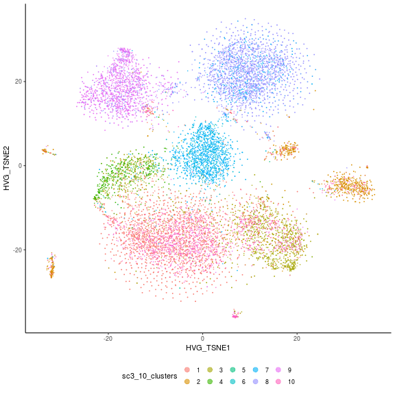
##
## 1 2 3 4 5 6 7 8 9 10 11 12
## ASC 30 10 0 0 5 1 2 262 3 12 1328 6
## END 2 4 1 0 24 1 3 84 0 0 1 0
## exCA1 62 47 2 2 217 6 7 33 0 8 6 0
## exCA3 93 77 1 0 546 4 1 5 2 6 2 0
## exDG 19 4 1 0 221 10 2 1158 4 2 0 0
## exPFC 2178 40 13 8 53 22 154 34 6 767 46 20
## GABA 229 5 26 142 17 48 911 1 3 259 4 1
## MG 15 17 1 176 8 2 0 3 0 6 12 41
## NSC 0 0 0 122 2 0 0 4 0 0 7 26
## ODC 17 1525 6 1 3 1 2 10 143 260 14 657
## OPC 16 4 462 1 2 1 4 5 0 8 72 3
## <NA> 12 11 2 64 11 2 14 10 0 56 12 14
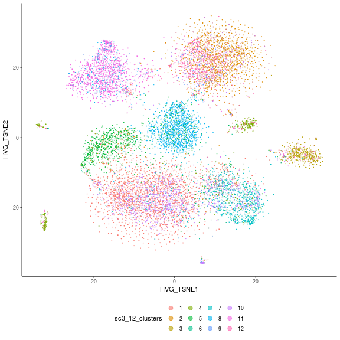
saveRDS(list(sce_hvg=sce_hvg,df_hvg=df_hvg,all_ks=all_ks),
file.path(work_dir,"post_sc3.rds"))
We obtainted the cell type and clustering resutls from [@habib2017massively]. Supplementary Table 10: supplement nmeth.4407-S10.xlsx file. Here we compare the cell type reported by Habib et al. (2017) with ours. Habib et al. (2017) identified genes with high variation by fitting a gamma distribution on the relation between mean and coefficient of variation and chose the number of PCs based on "the largest eigen value gap". It was not clear what is the number of PCs used. Then they used these top PCs to perform tSNE anlaysis and clustering using a graph based method.
tmp_lab = smart_RT(file.path(work_dir,"cluster_num_label.txt"),
sep = "\t",header = TRUE)
tmp_lab
## Cell.ID Name Cell.Type.ID Name.1
## 1 1 exPFC1 1 exPFC
## 2 2 exPFC2 1 exPFC
## 3 3 exCA1 2 exCA1
## 4 4 exCA3 3 exCA3
## 5 5 GABA1 4 GABA
## 6 6 GABA2 4 GABA
## 7 7 exDG 5 exDG
## 8 8 ASC1 6 ASC
## 9 9 ASC2 6 ASC
## 10 10 ODC1 7 ODC
## 11 11 ODC2 7 ODC
## 12 12 OPC 8 OPC
## 13 13 MG 9 MG
## 14 14 NSC 10 NSC
## 15 15 END 11 END
tmp_lab = name_change(tmp_lab,"Name","Cluster.Name")
tmp_lab = name_change(tmp_lab,"Name.1","Cell_Type")
tmp_res = smart_RT(file.path(work_dir,"paper_cluster_res.txt"),
sep = "\t",header = TRUE,comment.char = "")
dim(tmp_res); tmp_res[1:5,]
## [1] 14963 5
## Cell.ID X.Genes X.Transcripts Cluster.ID Cluster.Name
## 1 hHP1_AGACCGCGACTA 2289 3946 1 exPFC1
## 2 hHP1_AAATCGTAGTAG 1311 2077 1 exPFC1
## 3 hHP1_TCACCAGGCGAT 676 978 1 exPFC1
## 4 hHP1_GCATACAGTGAA 916 1425 1 exPFC1
## 5 hHP1_CCCCCTCAGTAC 481 641 1 exPFC1
tmp_res = name_change(tmp_res,"X.Genes","nGenes")
tmp_res = name_change(tmp_res,"X.Transcripts","nTranscripts")
tmp_res = smart_merge(tmp_res, tmp_lab[,c("Cluster.Name","Cell_Type")],
all.x=TRUE)
summary(tmp_res$nGenes)
## Min. 1st Qu. Median Mean 3rd Qu. Max.
## 201.0 337.0 529.0 658.4 826.0 4249.0
smart_hist(tmp_res$nGenes,breaks=50,main="",xlab="number of genes per cell")

df_hvg$Cell.ID = colnames(sce_hvg)
smart_table(df_hvg$Cell.ID %in% tmp_res$Cell.ID)
##
## TRUE
## 13181
tmp_res$Cell.ID[!(tmp_res$Cell.ID %in% df_hvg$Cell.ID)][1:5]
## [1] "PFC2-A2_GTTGAGGAGCGT" "PFC2-A2_CAAATGCCTGTC" "PFC2-A2_GGTTTGGCCCTN"
## [4] "PFC2-A2_ACCAGGCTTCGA" "PFC2-A1_TCCGTTCTTCGT"
tmp_res$Cell.ID = gsub("-",".",tmp_res$Cell.ID)
table(df_hvg$Cell.ID %in% tmp_res$Cell.ID)
##
## FALSE TRUE
## 7812 5369
# Merge and compare
all_clust_res = smart_merge(df_hvg,tmp_res)
sc3_res = smart_df(colData(sce_hvg)[,paste0("sc3_",all_ks,"_clusters")])
for(ks in all_ks){
sc3_label = paste0("sc3_",ks,"_clusters")
sc3_res[,sc3_label] = as.factor(sc3_res[,sc3_label])
}
sc3_res$Cell.ID = colnames(sce_hvg)
all_clust_res = smart_merge(all_clust_res, sc3_res)
dim(all_clust_res)
## [1] 5369 31
all_clust_res[1:5,]
## Cell.ID sc3_10_clusters sc3_12_clusters sample_name
## 1 hCc_AAAAAGCTACAA 1 1 hCc_AAAAAGCTACAA
## 2 hCc_AAACAGGTGAGG 3 7 hCc_AAACAGGTGAGG
## 3 hCc_AAACCCTTTACA 3 1 hCc_AAACCCTTTACA
## 4 hCc_AAACGTGACGGA 1 1 hCc_AAACGTGACGGA
## 5 hCc_AAAGAACTCGCG 1 1 hCc_AAAGAACTCGCG
## part_cell_id paper_TSNE1 paper_TSNE2 log10_total_features paper_clusters
## 1 hCc 2.804881 -1.888592 2.866287 1
## 2 hCc 16.965708 -6.768078 3.170262 5
## 3 hCc 17.828567 -2.514648 3.044540 5
## 4 hCc 14.756007 -4.965194 2.849419 5
## 5 hCc -1.552130 3.860966 2.716838 1
## paper_clusters_name paper_cell_type HVG_PC1 HVG_PC2 HVG_TSNE1
## 1 exPFC1 exPFC -3.809914 -1.148090 -11.373592
## 2 GABA1 GABA -3.041883 -1.756074 12.935674
## 3 GABA1 GABA -4.335472 -1.149693 10.774738
## 4 GABA1 GABA -3.614090 -1.958961 9.624738
## 5 exPFC1 exPFC -4.001498 -2.066558 -4.033538
## HVG_TSNE2 KM_5 KM_6 KM_7 KM_8 KM_9 KM_10 KM_11 KM_12 KM_13 KM_14 KM_15
## 1 -15.96256 4 3 2 5 4 9 9 5 4 13 8
## 2 -12.62196 4 3 6 2 9 7 8 3 1 3 2
## 3 -11.35783 4 3 2 5 4 9 9 5 4 13 8
## 4 -10.86205 4 3 2 5 4 9 9 5 4 13 8
## 5 -13.48197 4 3 2 5 4 9 9 5 4 13 8
## Cluster.Name nGenes nTranscripts Cluster.ID Cell_Type
## 1 exPFC1 736 1034 1 exPFC
## 2 GABA1 1480 2391 5 GABA
## 3 GABA1 1107 1757 5 GABA
## 4 GABA1 708 935 5 GABA
## 5 exPFC1 520 673 1 exPFC
smart_table(all_clust_res[,c("Cell_Type","Cluster.ID")])
## Cluster.ID
## Cell_Type 1 2 3 4 5 6 7 8 9 10 11 12 13
## ASC 0 0 0 0 0 0 0 380 82 0 0 0 0
## END 0 0 0 0 0 0 0 0 0 0 0 0 0
## exCA1 0 0 90 0 0 0 0 0 0 0 0 0 0
## exCA3 0 0 0 200 0 0 0 0 0 0 0 0 0
## exDG 0 0 0 0 0 0 64 0 0 0 0 0 0
## exPFC 2479 262 0 0 0 0 0 0 0 0 0 0 0
## GABA 0 0 0 0 629 469 0 0 0 0 0 0 0
## MG 0 0 0 0 0 0 0 0 0 0 0 0 60
## ODC 0 0 0 0 0 0 0 0 0 192 190 0 0
## OPC 0 0 0 0 0 0 0 0 0 0 0 181 0
## <NA> 0 0 0 0 0 0 0 0 0 0 0 0 0
## Cluster.ID
## Cell_Type 15 16 18
## ASC 0 0 0
## END 18 0 0
## exCA1 0 0 0
## exCA3 0 0 0
## exDG 0 0 0
## exPFC 0 0 0
## GABA 0 0 0
## MG 0 0 0
## ODC 0 0 0
## OPC 0 0 0
## <NA> 0 50 23
for(num_clust in all_num_clust){
km_label = paste0("KM_",num_clust)
print(smart_table(all_clust_res[,c("Cell_Type",km_label)]))
t2 = melt(smart_table(all_clust_res[,c("Cell_Type",km_label)]))
colnames(t2)[2] = "cluster"
print(summary(t2$value))
print(gg.heatmap(t2,paste0("kmeans ",num_clust," clusters")))
}
## KM_5
## Cell_Type 1 2 3 4 5
## ASC 412 9 1 40 0
## END 0 0 0 4 14
## exCA1 1 1 0 88 0
## exCA3 0 0 0 200 0
## exDG 0 0 0 64 0
## exPFC 17 29 4 2690 1
## GABA 3 1 1 1093 0
## MG 5 7 0 18 30
## ODC 2 343 1 35 1
## OPC 0 1 158 22 0
## <NA> 2 6 0 64 1
## Min. 1st Qu. Median Mean 3rd Qu. Max.
## 0.00 0.00 1.00 97.62 20.00 2690.00
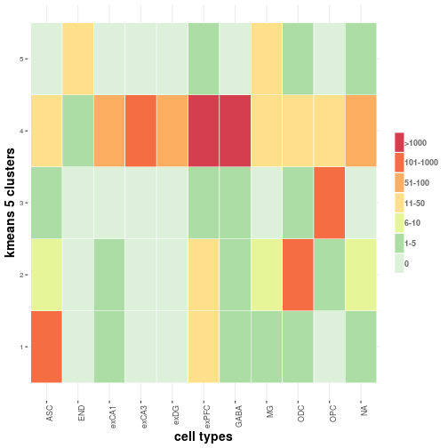
## KM_6
## Cell_Type 1 2 3 4 5 6
## ASC 0 1 39 9 413 0
## END 0 0 5 0 0 13
## exCA1 0 0 88 1 1 0
## exCA3 0 0 200 0 0 0
## exDG 0 0 64 0 0 0
## exPFC 0 4 2690 29 17 1
## GABA 0 1 1093 1 3 0
## MG 0 0 15 4 4 37
## ODC 0 1 35 343 2 1
## OPC 0 158 22 1 0 0
## <NA> 0 0 64 5 2 2
## Min. 1st Qu. Median Mean 3rd Qu. Max.
## 0.00 0.00 1.00 81.35 12.00 2690.00
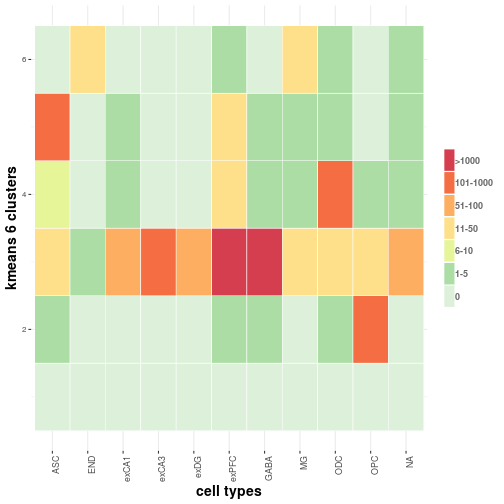
## KM_7
## Cell_Type 1 2 3 4 5 6 7
## ASC 1 32 0 413 9 7 0
## END 0 5 0 0 0 0 13
## exCA1 0 86 0 1 1 2 0
## exCA3 0 197 0 0 0 3 0
## exDG 0 63 0 0 0 1 0
## exPFC 4 2648 0 17 29 42 1
## GABA 0 224 0 2 1 871 0
## MG 0 15 0 4 4 0 37
## ODC 1 28 0 2 343 7 1
## OPC 157 20 0 0 1 3 0
## <NA> 0 29 0 2 5 35 2
## Min. 1st Qu. Median Mean 3rd Qu. Max.
## 0.00 0.00 1.00 69.73 13.00 2648.00
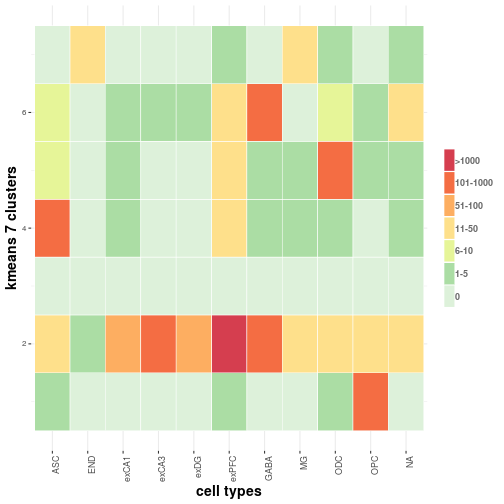
## KM_8
## Cell_Type 1 2 3 4 5 6 7 8
## ASC 0 2 413 1 34 3 9 0
## END 0 0 0 0 4 1 0 13
## exCA1 0 2 1 0 53 33 1 0
## exCA3 0 2 0 0 117 81 0 0
## exDG 0 0 0 0 6 58 0 0
## exPFC 0 22 17 4 2642 28 27 1
## GABA 0 726 2 0 366 3 1 0
## MG 0 0 4 0 14 1 4 37
## ODC 0 6 2 1 26 2 344 1
## OPC 0 2 0 157 20 1 1 0
## <NA> 0 35 2 0 9 20 5 2
## Min. 1st Qu. Median Mean 3rd Qu. Max.
## 0.00 0.00 1.00 61.01 13.25 2642.00
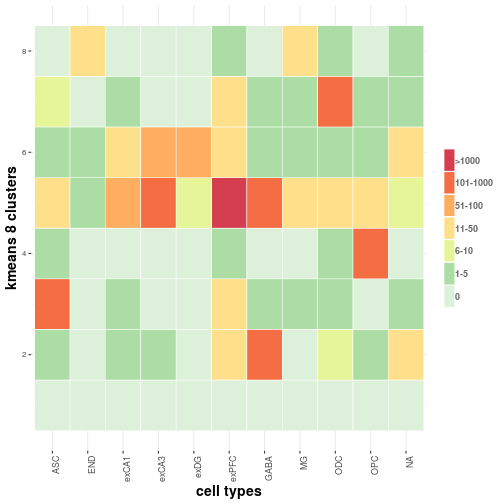
## KM_9
## Cell_Type 1 2 3 4 5 6 7 8 9
## ASC 9 0 3 34 0 413 0 1 2
## END 0 13 1 4 0 0 0 0 0
## exCA1 1 0 33 53 0 1 0 0 2
## exCA3 0 0 81 117 0 0 0 0 2
## exDG 0 0 58 6 0 0 0 0 0
## exPFC 30 1 27 2641 0 16 0 4 22
## GABA 1 0 3 367 0 2 0 0 725
## MG 4 37 1 14 0 4 0 0 0
## ODC 313 1 2 24 34 2 0 1 5
## OPC 1 0 1 20 0 0 0 157 2
## <NA> 6 2 19 9 0 2 0 0 35
## Min. 1st Qu. Median Mean 3rd Qu. Max.
## 0.00 0.00 1.00 54.23 9.00 2641.00
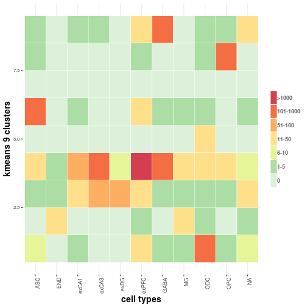
## KM_10
## Cell_Type 1 2 3 4 5 6 7 8 9 10
## ASC 0 413 0 9 3 1 2 0 34 0
## END 13 0 0 0 1 0 0 0 4 0
## exCA1 0 1 0 1 33 0 2 0 53 0
## exCA3 0 0 0 0 81 0 2 0 117 0
## exDG 0 0 0 0 58 0 0 0 6 0
## exPFC 0 16 0 30 27 4 22 1 2641 0
## GABA 0 2 0 1 3 0 726 0 366 0
## MG 0 5 0 5 1 0 0 35 14 0
## ODC 0 2 0 313 2 1 6 1 23 34
## OPC 0 0 0 1 1 157 2 0 20 0
## <NA> 0 2 0 7 19 0 35 1 9 0
## Min. 1st Qu. Median Mean 3rd Qu. Max.
## 0.00 0.00 0.50 48.81 6.00 2641.00
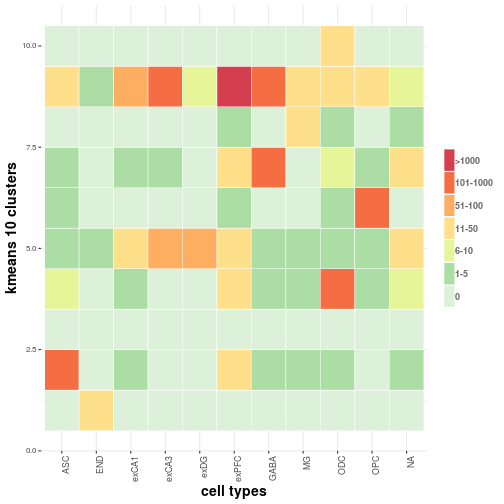
## KM_11
## Cell_Type 1 2 3 4 5 6 7 8 9 10 11
## ASC 35 0 1 1 8 386 0 1 30 0 0
## END 0 0 1 0 0 0 13 0 4 0 0
## exCA1 0 0 33 0 1 1 0 2 53 0 0
## exCA3 0 0 81 0 0 0 0 2 117 0 0
## exDG 0 0 58 0 0 0 0 0 6 0 0
## exPFC 1 0 26 0 27 19 0 24 2639 1 4
## GABA 0 0 3 0 1 3 0 724 367 0 0
## MG 0 0 1 0 5 5 0 0 14 35 0
## ODC 0 0 2 33 314 2 0 6 23 1 1
## OPC 0 0 1 0 1 1 0 2 20 0 156
## <NA> 0 0 14 0 7 2 0 40 9 1 0
## Min. 1st Qu. Median Mean 3rd Qu. Max.
## 0.00 0.00 0.00 44.37 5.00 2639.00
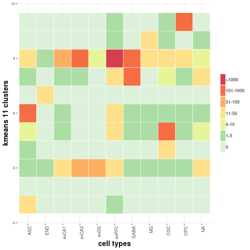
## KM_12
## Cell_Type 1 2 3 4 5 6 7 8 9 10 11 12
## ASC 0 1 2 8 28 0 386 0 35 1 1 0
## END 0 1 0 0 4 13 0 0 0 0 0 0
## exCA1 0 12 1 1 44 0 1 0 0 31 0 0
## exCA3 0 7 2 0 49 0 0 0 0 142 0 0
## exDG 0 53 0 0 6 0 0 0 0 5 0 0
## exPFC 0 16 14 27 2621 0 19 1 1 38 0 4
## GABA 0 0 710 1 373 0 3 0 0 11 0 0
## MG 0 1 0 5 13 0 5 35 0 1 0 0
## ODC 0 2 5 312 24 0 2 1 0 0 35 1
## OPC 0 2 2 1 17 0 2 0 0 2 0 155
## <NA> 0 21 31 7 10 0 2 1 0 1 0 0
## Min. 1st Qu. Median Mean 3rd Qu. Max.
## 0.00 0.00 0.50 40.67 5.25 2621.00
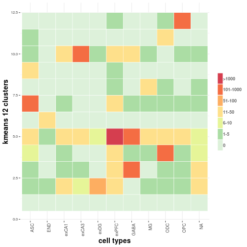
## KM_13
## Cell_Type 1 2 3 4 5 6 7 8 9 10 11 12 13
## ASC 2 0 35 29 1 0 1 0 1 0 2 7 384
## END 0 0 0 4 0 0 0 0 1 13 0 0 0
## exCA1 1 0 0 44 0 0 0 0 12 0 31 1 1
## exCA3 2 0 0 49 0 0 0 0 7 0 142 0 0
## exDG 0 0 0 6 0 0 0 0 53 0 5 0 0
## exPFC 13 4 1 2622 6 1 0 0 16 0 38 25 15
## GABA 710 0 0 372 0 0 0 0 0 0 11 2 3
## MG 0 0 0 11 0 34 0 0 1 0 1 8 5
## ODC 5 1 0 23 68 1 22 0 2 0 0 259 1
## OPC 2 156 0 17 0 0 0 0 2 0 2 1 1
## <NA> 31 0 0 10 0 1 0 0 21 0 1 7 2
## Min. 1st Qu. Median Mean 3rd Qu. Max.
## 0.00 0.00 0.00 37.55 5.50 2622.00
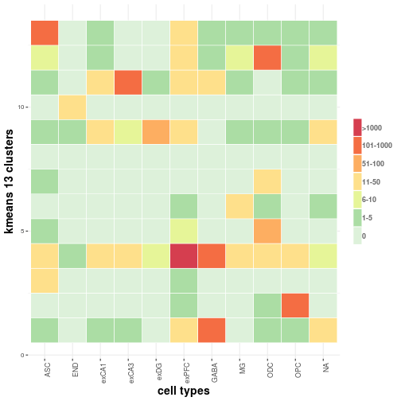
## KM_14
## Cell_Type 1 2 3 4 5 6 7 8 9 10 11 12 13
## ASC 0 1 1 7 21 0 0 1 330 1 0 72 28
## END 0 0 0 0 0 0 13 1 0 0 0 0 4
## exCA1 31 0 1 1 0 0 0 12 1 0 0 0 44
## exCA3 142 0 2 0 0 0 0 7 0 0 0 0 49
## exDG 5 0 0 0 0 0 0 53 0 0 0 0 6
## exPFC 38 0 13 22 1 1 0 16 19 6 0 0 2621
## GABA 11 0 710 2 0 0 0 0 5 0 0 0 370
## MG 1 0 0 8 0 33 0 1 6 0 0 0 11
## ODC 0 22 5 259 0 1 0 2 2 68 0 0 23
## OPC 2 0 2 1 0 0 0 2 3 0 0 0 17
## <NA> 1 0 31 7 0 1 0 21 2 0 0 0 10
## KM_14
## Cell_Type 14
## ASC 0
## END 0
## exCA1 0
## exCA3 0
## exDG 0
## exPFC 4
## GABA 0
## MG 0
## ODC 0
## OPC 154
## <NA> 0
## Min. 1st Qu. Median Mean 3rd Qu. Max.
## 0.00 0.00 0.00 34.86 5.00 2621.00
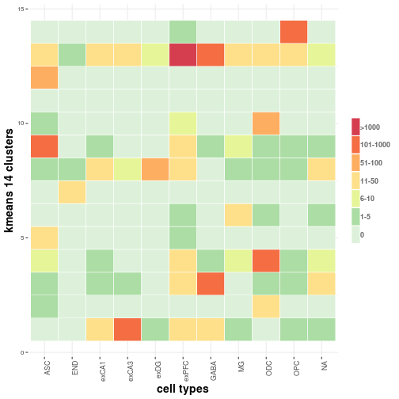
## KM_15
## Cell_Type 1 2 3 4 5 6 7 8 9 10 11 12 13
## ASC 0 1 15 0 1 0 1 27 1 338 0 0 0
## END 0 0 0 13 1 0 0 4 0 0 0 0 0
## exCA1 0 1 0 0 12 0 0 42 0 1 33 0 0
## exCA3 0 2 0 0 7 0 0 48 0 0 143 0 0
## exDG 0 0 0 0 53 0 0 6 0 0 5 0 0
## exPFC 1 12 1 0 16 4 0 2621 6 20 38 0 0
## GABA 0 710 0 0 0 0 0 370 0 5 11 0 0
## MG 33 0 0 0 1 0 0 11 0 6 1 0 0
## ODC 1 5 0 0 2 0 21 23 66 2 0 0 0
## OPC 0 2 0 0 2 155 0 17 0 2 2 0 0
## <NA> 1 31 0 0 21 0 0 10 0 2 1 0 0
## KM_15
## Cell_Type 14 15
## ASC 7 71
## END 0 0
## exCA1 1 0
## exCA3 0 0
## exDG 0 0
## exPFC 22 0
## GABA 2 0
## MG 8 0
## ODC 262 0
## OPC 1 0
## <NA> 7 0
## Min. 1st Qu. Median Mean 3rd Qu. Max.
## 0.00 0.00 0.00 32.54 4.00 2621.00
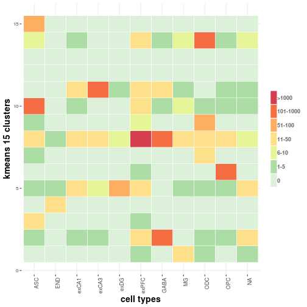
for(ks in all_ks){
sc3_label = paste0("sc3_",ks,"_clusters")
print(smart_table(all_clust_res[,c("Cell_Type",sc3_label)]))
t2 = melt(smart_table(all_clust_res[,c("Cell_Type",sc3_label)]))
colnames(t2)[2] = "cluster"
print(summary(t2$value))
print(gg.heatmap(t2,paste0("sc3 ",ks," clusters")))
}
## sc3_10_clusters
## Cell_Type 1 2 3 4 5 6 7 8 9 10
## ASC 21 0 4 0 0 1 1 83 343 9
## END 3 12 0 1 0 0 0 0 0 2
## exCA1 37 5 23 5 0 1 7 1 3 8
## exCA3 67 8 63 48 0 1 6 0 1 6
## exDG 6 0 0 2 0 10 44 0 0 2
## exPFC 1630 22 119 3 3 6 24 26 149 759
## GABA 143 100 526 3 0 0 3 0 51 272
## MG 7 31 1 0 0 1 0 8 3 9
## ODC 16 2 3 0 0 0 53 295 2 11
## OPC 10 127 5 1 0 1 2 1 3 31
## <NA> 10 4 4 0 0 0 4 5 9 37
## Min. 1st Qu. Median Mean 3rd Qu. Max.
## 0.00 0.00 3.00 48.81 15.00 1630.00
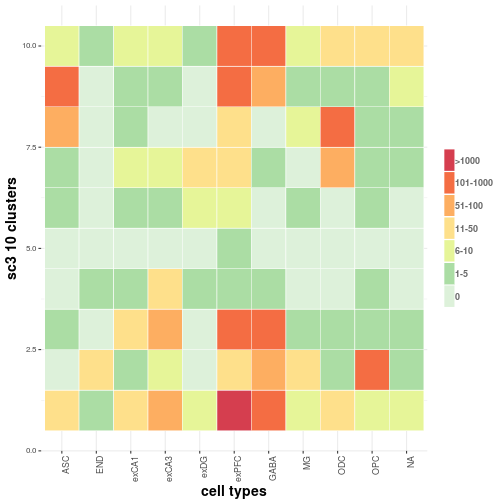
## sc3_12_clusters
## Cell_Type 1 2 3 4 5 6 7 8 9 10 11 12
## ASC 22 4 0 0 0 1 2 78 0 9 344 2
## END 3 0 0 13 0 0 0 0 0 0 0 2
## exCA1 40 7 1 0 26 1 2 4 0 8 1 0
## exCA3 64 15 0 0 108 2 1 3 1 6 0 0
## exDG 5 0 0 0 12 0 0 45 0 2 0 0
## exPFC 1705 20 8 2 32 16 148 18 3 762 18 9
## GABA 171 2 20 76 6 35 525 1 1 258 3 0
## MG 9 7 0 27 2 0 0 0 0 3 5 7
## ODC 15 191 0 1 2 1 1 3 25 37 1 105
## OPC 12 1 129 1 1 0 3 2 0 8 23 1
## <NA> 7 3 1 3 1 0 10 4 0 39 3 2
## Min. 1st Qu. Median Mean 3rd Qu. Max.
## 0.00 0.00 2.00 40.67 12.25 1705.00
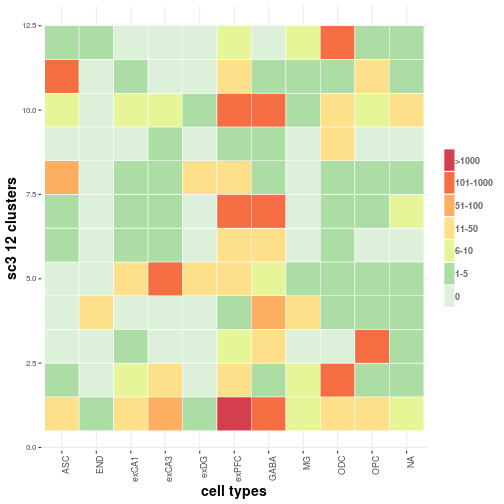
We plot our TSNE colored by our clustering results.
all_vars = c("Cell_Type",paste0("KM_",all_num_clust),
paste0("sc3_",all_ks,"_clusters"))
for(one_var in all_vars){
print(ggplot_custom(DATA = all_clust_res,X = "HVG_TSNE1",
Y = "HVG_TSNE2",COL = one_var,TYPE = "cat"))
}


Next we plot the TSNE by Habib et al. (2017). and colored by our clustering results.
all_vars = c("Cell_Type",paste0("KM_",all_num_clust),
paste0("sc3_",all_ks,"_clusters"))
for(one_var in all_vars){
print(ggplot_custom(DATA = all_clust_res,X = "paper_TSNE1",
Y = "paper_TSNE2",COL = one_var,TYPE = "cat"))
}


 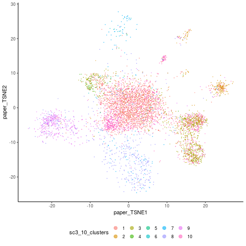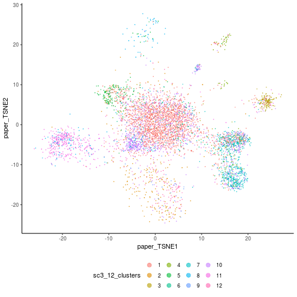
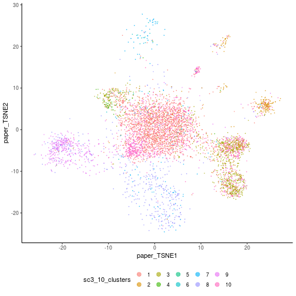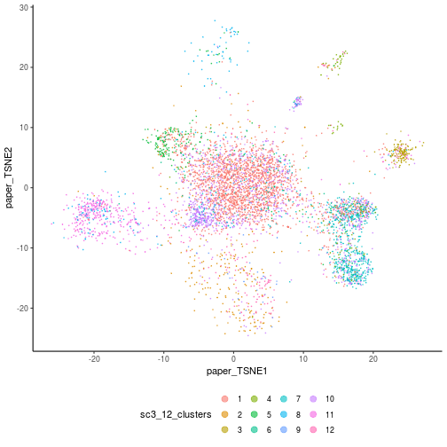
Finally we save the sce object and the clustering results
saveRDS(sce,file.path(work_dir,"sce.rds"))
saveRDS(sce_hvg,file.path(work_dir,"sce_hvg.rds"))
saveRDS(all_clust_res,file.path(work_dir,"all_clust_res.rds"))
sessionInfo()
## R version 3.5.1 (2018-07-02)
## Platform: x86_64-pc-linux-gnu (64-bit)
## Running under: Red Hat Enterprise Linux Server 7.6 (Maipo)
##
## Matrix products: default
## BLAS: /nas/longleaf/home/pllittle/downloads/R-3.5.1/lib64/R/lib/libRblas.so
## LAPACK: /nas/longleaf/home/pllittle/downloads/R-3.5.1/lib64/R/lib/libRlapack.so
##
## locale:
## [1] LC_CTYPE=en_US.UTF-8 LC_NUMERIC=C
## [3] LC_TIME=en_US.UTF-8 LC_COLLATE=en_US.UTF-8
## [5] LC_MONETARY=en_US.UTF-8 LC_MESSAGES=en_US.UTF-8
## [7] LC_PAPER=en_US.UTF-8 LC_NAME=C
## [9] LC_ADDRESS=C LC_TELEPHONE=C
## [11] LC_MEASUREMENT=en_US.UTF-8 LC_IDENTIFICATION=C
##
## attached base packages:
## [1] parallel stats4 stats graphics grDevices utils datasets
## [8] methods base
##
## other attached packages:
## [1] SC3_1.8.0 Rtsne_0.15
## [3] svd_0.4.1 limma_3.36.5
## [5] scran_1.8.4 scater_1.8.4
## [7] ggplot2_3.1.0 biomaRt_2.36.1
## [9] DropletUtils_1.0.3 SingleCellExperiment_1.2.0
## [11] SummarizedExperiment_1.10.1 DelayedArray_0.6.6
## [13] BiocParallel_1.14.2 matrixStats_0.54.0
## [15] Biobase_2.40.0 GenomicRanges_1.32.7
## [17] GenomeInfoDb_1.16.0 IRanges_2.14.12
## [19] S4Vectors_0.18.3 BiocGenerics_0.26.0
## [21] data.table_1.11.8 BiocInstaller_1.30.0
## [23] rmarkdown_1.10 markdown_0.8
## [25] knitr_1.20
##
## loaded via a namespace (and not attached):
## [1] ggbeeswarm_0.6.0 colorspace_1.3-2
## [3] rjson_0.2.20 class_7.3-14
## [5] dynamicTreeCut_1.63-1 rprojroot_1.3-2
## [7] XVector_0.20.0 DT_0.5
## [9] bit64_0.9-7 mvtnorm_1.0-8
## [11] AnnotationDbi_1.42.1 codetools_0.2-15
## [13] tximport_1.8.0 doParallel_1.0.14
## [15] robustbase_0.93-3 cluster_2.0.7-1
## [17] pheatmap_1.0.10 shinydashboard_0.7.1
## [19] shiny_1.2.0 rrcov_1.4-7
## [21] compiler_3.5.1 httr_1.3.1
## [23] backports_1.1.2 assertthat_0.2.0
## [25] Matrix_1.2-15 lazyeval_0.2.1
## [27] later_0.7.5 htmltools_0.3.6
## [29] prettyunits_1.0.2 tools_3.5.1
## [31] bindrcpp_0.2.2 igraph_1.2.2
## [33] gtable_0.2.0 glue_1.3.0
## [35] GenomeInfoDbData_1.1.0 reshape2_1.4.3
## [37] dplyr_0.7.8 doRNG_1.7.1
## [39] Rcpp_1.0.0 gdata_2.18.0
## [41] iterators_1.0.10 DelayedMatrixStats_1.2.0
## [43] stringr_1.3.1 mime_0.6
## [45] irlba_2.3.2 rngtools_1.3.1
## [47] gtools_3.8.1 WriteXLS_4.0.0
## [49] statmod_1.4.30 XML_3.98-1.16
## [51] DEoptimR_1.0-8 edgeR_3.22.5
## [53] zlibbioc_1.26.0 scales_1.0.0
## [55] hms_0.4.2 promises_1.0.1
## [57] rhdf5_2.24.0 RColorBrewer_1.1-2
## [59] memoise_1.1.0 gridExtra_2.3
## [61] pkgmaker_0.27 stringi_1.2.4
## [63] RSQLite_2.1.1 highr_0.7
## [65] pcaPP_1.9-73 foreach_1.4.4
## [67] e1071_1.7-0 caTools_1.17.1.1
## [69] bibtex_0.4.2 rlang_0.3.0.1
## [71] pkgconfig_2.0.2 bitops_1.0-6
## [73] evaluate_0.12 lattice_0.20-38
## [75] ROCR_1.0-7 purrr_0.2.5
## [77] Rhdf5lib_1.2.1 bindr_0.1.1
## [79] htmlwidgets_1.3 labeling_0.3
## [81] bit_1.1-14 tidyselect_0.2.5
## [83] plyr_1.8.4 magrittr_1.5
## [85] R6_2.3.0 gplots_3.0.1
## [87] DBI_1.0.0 pillar_1.3.0
## [89] withr_2.1.2 RCurl_1.95-4.11
## [91] tibble_1.4.2 crayon_1.3.4
## [93] KernSmooth_2.23-15 viridis_0.5.1
## [95] progress_1.2.0 locfit_1.5-9.1
## [97] grid_3.5.1 blob_1.1.1
## [99] FNN_1.1.2.1 digest_0.6.18
## [101] xtable_1.8-3 httpuv_1.4.5
## [103] munsell_0.5.0 registry_0.5
## [105] beeswarm_0.2.3 viridisLite_0.3.0
## [107] vipor_0.4.5